Thesis live: Israel–Palestine in European media
As of 22 Oct 2026 23:53 · the panels below are rebuilt every 5 minutes (took 305 s); the live status updates every 5 seconds when this page is opened via http://127.0.0.1:8765/dashboard.html. Statistical analyses run once, at the very end. Rough live analysis during scraping, import and translation – not final.
Live status
Pipeline right now
Scraper, import, translation and rebuild of this page. The numbers come directly from the running processes, the download folder and the database.
Loading …
Map and data collection
World mapMap ↗Map code ↗
Choose an indicator and an area; countries without enough data are grey, countries planned for the sample are tinted orange (counted as 0 until their outlets are collected).
Loading map …
Retrieval by countryRetrieval ↗Fetching pages ↗
Share of relevant URLs for which a text of at least 300 characters has been collected (URL comparison). Countries without data yet and planned countries show 0 % and fill in as soon as their outlets are collected. Updates live.
PaceTime series ↗
Relevant URLs with a stored article, in total (last 3 days). Updates live.
Half pages translated (NLLB)
Articles per dayCounting ↗
All parsed articles (all languages), per study period. Same scale in all panels.
Coverage: country × periodCounting ↗Periods ↗
Parsed articles per country and period (K = control days). Gaps show where sitemaps or Media Cloud deliver nothing.
F1 7 Oct 2023–30 Nov 2023: Attack, start of the war, al-Ahli · F2 29 Dec 2023–29 Feb 2024: ICJ case, German intervention, Flour Massacre · F3 1 May 2024–31 May 2024: ICC warrant applications, Rafah, recognitions ES/IE · F4 19 Jul 2024–30 Sep 2024: ICJ advisory opinion on the occupation, UN resolution · F5 15 Jul 2025–30 Sep 2025: Famine, recognitions, UN commission on genocide · F6 1 Oct 2025–31 Oct 2025: Ceasefire, hostage release · K = control days: 4 constructed weeks (28 days; for each weekday 4 randomly drawn days between October 2023 and October 2025 outside F1–F6). They show coverage without a key event and serve as the baseline for F1–F6.
Translation pipeline
Translation records completed and eligible articles still without a record. Translation runs locally with NLLB-200 on the GPU (nightly run 01:00–09:00, quiet mode).
| Engine | Field | Completed records | Open candidates |
|---|---|---|---|
| NLLB | titel | 281,687 | 0 |
| NLLB | lead | 281,687 | 0 |
| NLLB | halbseite | 251,490 | 0 |
Translation cross-check (second model)Display ↗
As of 2026-10-15 23:25 · sample of 600 titles · A = NLLB-200 (1.3B distilled), B = Tencent Hy-MT2-1.8B (local) · threshold chrF < 40.
| Language | Pairs | Mean chrF | Below threshold |
|---|---|---|---|
| DE | 60 | 71.0 | 5 % |
| ES | 60 | 76.7 | 0 % |
| IT | 60 | 68.2 | 5 % |
| FR | 60 | 69.8 | 0 % |
| NL | 60 | 68.3 | 5 % |
| PT | 60 | 73.3 | 2 % |
| PL | 60 | 65.9 | 3 % |
| CS | 60 | 65.2 | 5 % |
| RU | 60 | 67.1 | 3 % |
| TR | 60 | 64.6 | 13 % |
Selected examples (lowest agreement)
| Lang. | Original | A | B | chrF |
|---|---|---|---|---|
| TR | “Al Yüreğim Senin Olsun!” | Take my heart to be yours! | “Let My Heart Be Yours!” | 25 |
| CS | 9. října 2023 - 90’ ČT24 | Česká televize | October 9th, 2023, 90th episode of the 24th season. | October 9, 2023 - 90’ ČT24 | Czech Television | 26 |
| DE | Israels Armeesprecher – "Geht am Allerwertesten vorbei" | Heute.at | Spokesman for the Israeli army "Pass the most valuable". | Israeli Army Spokesperson – “Proceed with all due care” | Heute.at | 27 |
| TR | İnsandan yana Taraf Olmak - Çiçek Göçkün | Taking the Side of Man - The Flower of Immigration | Being on the Human Side – Flower Migrant | 27 |
| PT | Gaza. "Há frustração dos EUA por ainda não haver acordo" | Gaza, please. "There is U.S. frustration that there is no deal yet" | Gaza. “The US is frustrated because no agreement has been reached yet” | 28 |
| CS | 5. května 2024 - Zóna ČT24 | Česká televize | May 5th, 2024 - Area 24 | May 5, 2024 - ČT24 Zone | Czech Television | 30 |
| TR | Doymak bilmez ganimetçi hırsızlar! - Serhat İncirli | They're thieves who can't get enough! | Insensitive thieves who don’t care about spoils! – Serhat İncirli | 33 |
| IT | Ghali, appello agli artisti per Gaza: “C’è un genocidio, è incredibile non esporsi” | Ghali, appeal to artists for Gaza: It's a genocide, it's unbelievable not to be exposed | Ghali calls on artists in Gaza: “There is a genocide; it’s incredible that no one speaks out.” | 33 |
| TR | Güneyde terörizm bilgi işlem birimi oluşturuldu | A counterterrorism intelligence unit has been set up in the south. | A terrorism information unit was established in the South | 33 |
| DE | UNRWA soll vorerst Teilbetrag erhalten | UNRWA to receive partial funding for the time being | UNRWA should receive a partial amount for now | 35 |
| PL | Izrael masakruje obóz uchodźców w Gazie, ponad 70 ofiar śmiertelnych nalotu | Israel massacres Gaza refugee camp, more than 70 killed in deadly airstrike | Israel is killing a refugee camp in Gaza; over 70 deaths due to the attack | 35 |
| IT | Guerra Israele - Hamas, le notizie del 2 maggio | Israel-Hamas war, the news of 2 May | Israeli War – Hamas, news from May 2 | 35 |
Meaning check (sentence embeddings, paraphrase-multilingual-MiniLM-L12-v2, run locally)
chrF compares characters, so a paraphrase scores low. Here each pair is also compared by meaning: cosine similarity original–A, original–B and A–B (see the last column of the examples). Of 600 pairs, the pairs below the chrF threshold are split into harmless paraphrases and real doubts.
| Verdict | Pairs | Share |
|---|---|---|
| agree (chrF ≥ threshold) | 575 | 95.8 % |
| paraphrase: same meaning, different wording | 19 | 3.2 % |
| NLLB far from the original, B close | 6 | 1.0 % |
| Lang. | Original | A (NLLB) | B | chrF | cos o–A / o–B / A–B | Verdict |
|---|---|---|---|---|---|---|
| CS | 9. října 2023 - 90’ ČT24 | Česká televize | October 9th, 2023, 90th episode of the 24th season. | October 9, 2023 - 90’ ČT24 | Czech Television | 26 | 0.59 / 0.99 / 0.56 | NLLB far from the original, B close |
| DE | Israels Armeesprecher – "Geht am Allerwertesten vorbei" | Heute.at | Spokesman for the Israeli army "Pass the most valuable". | Israeli Army Spokesperson – “Proceed with all due care” | Heute.at | 27 | 0.62 / 0.72 / 0.70 | NLLB far from the original, B close |
| TR | İnsandan yana Taraf Olmak - Çiçek Göçkün | Taking the Side of Man - The Flower of Immigration | Being on the Human Side – Flower Migrant | 27 | 0.59 / 0.70 / 0.75 | NLLB far from the original, B close |
| CS | 5. května 2024 - Zóna ČT24 | Česká televize | May 5th, 2024 - Area 24 | May 5, 2024 - ČT24 Zone | Czech Television | 30 | 0.60 / 0.95 / 0.59 | NLLB far from the original, B close |
| CS | 28. října 2023 - Události | Česká televize | October 28th, 2023 - What's going on? | October 28, 2023 - Events | Czech Television | 37 | 0.56 / 0.99 / 0.56 | NLLB far from the original, B close |
| NL | Defensie gaat opnieuw vanuit de lucht voedselhulp geven aan Gaza | The Defense Department will resume airlifting food aid to Gaza. | The defense forces will once again provide food aid to Gaza from the air | 40 | 0.61 / 0.76 / 0.77 | NLLB far from the original, B close |
Limit: embeddings catch lost or invented content but not every subtle error (e.g. "top scorer" rendered as "goalkeeper" looks like a paraphrase).
Quality classifier: Titles
Trained on 4,800 pairs (label: NLLB agrees with the independent second model); 98.6 % agree. Cross-validated AUC 0.922. At the chosen threshold 88 % are kept (precision 99.5 %). Trained on 10 European languages only; other languages stay unscored until retrained.
| Language | Pairs | Agree | Kept |
|---|---|---|---|
| DE | 500 | 98.2 % | 77 % |
| IT | 500 | 99.6 % | 93 % |
| ES | 500 | 100.0 % | 99 % |
| FR | 500 | 100.0 % | 98 % |
| PL | 500 | 98.2 % | 86 % |
| CS | 500 | 97.4 % | 88 % |
| PT | 500 | 99.6 % | 96 % |
| NL | 500 | 97.4 % | 81 % |
| RU | 500 | 98.0 % | 84 % |
| TR | 300 | 96.3 % | 75 % |
Quality classifier: Half pages
Trained on 4,591 pairs (label: NLLB agrees with the independent second model); 97.5 % agree. Cross-validated AUC 0.947. At the chosen threshold 95 % are kept (precision 99.2 %). Trained on 10 European languages only; other languages stay unscored until retrained.
| Language | Pairs | Agree | Kept |
|---|---|---|---|
| AR | 100 | 100.0 % | 98 % |
| BG | 100 | 100.0 % | 100 % |
| BS | 100 | 100.0 % | 100 % |
| CA | 100 | 100.0 % | 99 % |
| CS | 150 | 99.3 % | 100 % |
| DA | 100 | 100.0 % | 100 % |
| DE | 203 | 100.0 % | 100 % |
| EL | 100 | 97.0 % | 99 % |
| ES | 250 | 98.8 % | 96 % |
| ET | 100 | 95.0 % | 89 % |
| EU | 100 | 97.0 % | 89 % |
| FI | 100 | 95.0 % | 87 % |
| FR | 249 | 99.2 % | 99 % |
| GL | 100 | 100.0 % | 100 % |
| HR | 100 | 98.0 % | 98 % |
| HU | 100 | 93.0 % | 86 % |
| IS | 100 | 99.0 % | 98 % |
| IT | 250 | 100.0 % | 100 % |
| LT | 100 | 96.0 % | 90 % |
| LV | 100 | 92.0 % | 82 % |
| MK | 100 | 100.0 % | 99 % |
| NL | 248 | 100.0 % | 99 % |
| NO | 100 | 99.0 % | 97 % |
| PL | 247 | 94.3 % | 90 % |
| PT | 250 | 78.4 % | 69 % |
| RO | 100 | 100.0 % | 99 % |
| RU | 246 | 100.0 % | 100 % |
| SK | 100 | 99.0 % | 97 % |
| SL | 100 | 98.0 % | 97 % |
| SQ | 100 | 100.0 % | 100 % |
| SV | 100 | 100.0 % | 99 % |
| TR | 198 | 100.0 % | 98 % |
| UR | 100 | 100.0 % | 100 % |
Method (planned): a random sample of titles per source language is translated a second time with an independent open-weights model (Tencent HY-MT2), run locally on this PC – no text is sent to a cloud API. The two English outputs are compared with chrF (character n-gram F-score, 0–100) per language; pairs below a threshold are listed as examples. There is no judge model and no correction is written back: the check only reports where the main translation (NLLB) is doubtful.
Translation quality classifierTitles ↗Half pages ↗Display ↗
A classifier estimates, for every NLLB translation, how likely it is to be correct. Texts below a threshold are flagged as uncertain (the classifier is cautious: most flagged texts are actually fine), not removed: the main analysis uses the full corpus, the quality-filtered version is a robustness check (filtering would bias against hard texts and languages).
| Field | Training data | AUC | Flagged (uncertain) | Good among kept | Really bad among flagged | Rated so far |
|---|---|---|---|---|---|---|
| Titles | 4,800 pairs (69 bad) | 0.92 | 11.8 % | 99.5 % | 9 % | 184,834 of 251,490 (done) |
| Half pages | 4,591 pairs (116 bad) | 0.95 | 4.8 % | 99.2 % | 37 % | 190,032 of 251,490 (done) |
Flagged share by source language
| Language | Titles rated | Titles flagged | Half pages rated | Half pages flagged |
|---|---|---|---|---|
| DE | 24,643 | 24.2 % | 24,644 | 0.0 % |
| ES | 23,995 | 2.4 % | 27,140 | 1.1 % |
| IT | 14,123 | 7.2 % | 14,123 | 0.0 % |
| FR | 11,865 | 1.2 % | 11,865 | 0.1 % |
| HU | not rated | not rated | ||
| EL | not rated | not rated | ||
| SV | not rated | not rated | ||
| HR | not rated | not rated | ||
| PT | 5,810 | 6.2 % | 6,173 | 20.6 % |
| LT | not rated | not rated | ||
| RO | not rated | not rated | ||
| NL | 5,613 | 26.4 % | 5,613 | 0.0 % |
| BG | not rated | not rated | ||
| DA | not rated | not rated | ||
| FI | not rated | not rated | ||
| NO | not rated | not rated | ||
| SK | not rated | not rated | ||
| PL | 4,410 | 16.6 % | 4,410 | 1.9 % |
| BS | not rated | not rated | ||
| RU | 3,250 | 21.0 % | 4,110 | 0.0 % |
| CS | 3,369 | 16.7 % | 3,369 | 0.1 % |
| SL | not rated | not rated | ||
| CA | not rated | not rated | ||
| LV | not rated | not rated | ||
| ET | not rated | not rated | ||
| GL | not rated | not rated | ||
| IS | not rated | not rated | ||
| EU | not rated | not rated | ||
| TR | 302 | 23.8 % | 302 | 0.0 % |
| SQ | not rated | not rated |
How it works: features come only from the original and the NLLB text (meaning similarity by sentence embeddings, length ratio, numbers, names, repetitions, English share, for half pages also sentence coverage in both directions), so it runs on every article without a second model. Training label: NLLB agrees with the independent model Hy-MT2 (chrF or meaning similarity). AUC: how well good and bad are separated (1 = perfect).
Limit: trained only on 10 European languages (DE IT ES FR PL CS PT NL RU TR). All other languages are not rated until the classifier is retrained with data from those languages. There are few bad examples in the training data (about 1.4 % of titles, 3.5 % of half pages), so the numbers are indicative.
Workflow (Snakemake)Local ↗Cluster ↗Diagram ↗Display ↗
Only this part is a graph: the batch section handled by Snakemake (translation and quality scoring on the cluster, steps 5 and 6 of the overview). Mathematically it is a directed acyclic graph: every step is a node with its inputs and outputs, the arrows are the dependencies, and Snakemake derives the order, the parallel jobs (one per package) and what has to be re-run from it. The rest of the pipeline (collecting, import, relevance, analysis) runs as always-on services and loops and is not modelled as a graph. Click a node or block to zoom in and see its code (click again to zoom out).
Bulk translation and scoring run as a Snakemake workflow: every step declares its inputs and outputs, so the run is reproducible, resumable (finished steps are skipped) and parallel on the cluster (one GPU job per package). It complements the always-on services (scraper, importer, local translator), it does not replace them.
Pipeline stages: the dependencies, one after another
Path of one article; each stage needs the result of the one before. In operation the stages run at the same time on different articles.
Click a block to zoom in and see its code.
Snakemake graph: the batch part (translation and quality classifier)
Nodes are rules, arrows are dependencies. The top row is the translation, the lower two rows are the quality classifier, which needs more steps: first the Hy-MT2 comparison pairs (part 1), then training on the PC and finally scoring with the trained model (part 2). Rows without an arrow between them run independently and at the same time.
Last Snakemake run
- Why not the scraper: its bottleneck is request pacing and the Media Cloud quota, not dependencies.
- Local translator stays for the continuous trickle of new articles; Snakemake is for large batches (new countries, re-runs).
- Results enter as engine
nllb_hpcand are not used in the analysis until validated against the localnllbtranslation. - Start:
snakemake -s workflow/Snakefile --cores 1 --config lauf=NAME(needs an open SSH master, one OTP per 12 h). Live job state: stage 8 above.
Framing, sources and verification
Framing by countryDictionary ↗Live count ↗
Share of articles (%) containing at least one term of the frame. Dictionary from a4_analyse.R, applied to title + half page (English or NLLB translation). Only countries with ≥ 10 articles.
Framing by periodDictionary ↗
As above, all countries together.
F1 7 Oct 2023–30 Nov 2023: Attack, start of the war, al-Ahli · F2 29 Dec 2023–29 Feb 2024: ICJ case, German intervention, Flour Massacre · F3 1 May 2024–31 May 2024: ICC warrant applications, Rafah, recognitions ES/IE · F4 19 Jul 2024–30 Sep 2024: ICJ advisory opinion on the occupation, UN resolution · F5 15 Jul 2025–30 Sep 2025: Famine, recognitions, UN commission on genocide · F6 1 Oct 2025–31 Oct 2025: Ceasefire, hostage release · K = control days: 4 constructed weeks (28 days; for each weekday 4 randomly drawn days between October 2023 and October 2025 outside F1–F6). They show coverage without a key event and serve as the baseline for F1–F6.
Framing by region and continent
Share of articles (%) with the frame, countries grouped by their metadata (laender/laender_metadaten.csv): continent, EU membership and UN region. Only groups with ≥ 10 articles; further continents and regions appear as soon as outlets from those countries are collected and translated. Cyprus and Russia count as Europe.
Sources: who is something attributed to?Patterns ↗Analysis ↗
Share of sentences with an attribution (“said”, “according to” …) that name the actor, in %. Countries with ≥ 20 attributions.
“Could not be independently verified”Patterns ↗
Share of articles with a verification caveat.
Regional and minority media
145 outlets in 79 groups (e.g. Scotland, Wales, Northern Ireland, Catalonia, Basque Country, Russian-language media in the Baltic states, Turkish Cypriot media). “nationwide” means the other outlets of the same country.
Articles per groupRegional media ↗
Parsed articles of the regional and minority media.
Framing: group vs. nationwideCounting ↗
Share of articles with frame (%), only countries with regional media and rows with ≥ 10 translated articles.
Outlets compared
Differences between the outlets of one country: share of articles with a frame or share of attributions per source. Outlets sorted from left to right by their (provisional) political classification; values only from 10 translated or English articles (sources: from 10 attributions).
Selection and classification of outletsOutlet list ↗Regional media ↗
Selection criteria (draft as of 7 Oct 2026; see README and research design): five outlets per country, at least one of them public service, the others private and spread across the political spectrum (left to right) and across outlet types (quality paper, tabloid, online, broadcaster). In the core countries 3–4 outlets enter the analysis, in the breadth countries 2 (public service + quality paper). Added on 8 Oct 2026: regional and minority media for parts of a country with their own public sphere (e.g. Scotland, Wales, Northern Ireland, Catalonia, Basque Country) and for linguistic or cultural groups (e.g. Russian-language media in the Baltic states, Turkish Cypriot media). The political classification of each outlet is documented where sources exist (eurotopics of the German Federal Agency for Civic Education, European Media Systems Survey 2010); click an outlet for the reasoning and evidence.
Public opinion: representative surveys
YouGov EuroTrack (Oct 2023 to May 2025) and Pew Global Attitudes (spring 2025 and 2026), values from the published tables (umfragen/umfragen_israel_palaestina.csv, with the source of each row). Only countries covered by the institutes.
Sympathy: Israeli vs. Palestinian side (YouGov)Data ↗Analysis ↗
“In the conflict between Israel and the Palestinians, which side do you sympathise with more?” Share in %; “both equally” and “don’t know” not shown.
![YouGov: sympathy with the Palestinian minus the Israeli side, by UN subregion]()
![YouGov: sympathy with the Palestinian minus the Israeli side, by UN subregion]()
Unfavourable view of Israel (Pew)Data ↗Tests ↗
Share “somewhat” or “very unfavourable”, spring 2025 and 2026. Lines connect the two waves, grouped by direction; labels show the change in percentage points (pp) and relative to 2025 (%).
![Pew: unfavourable view of Israel, spring 2025 and 2026, by change and continent]()
![Pew: unfavourable view of Israel, spring 2025 and 2026, by change and continent]()
Media vs. public opinion±45-day window ↗
Each country is a dot: survey value (x) against the media indicator (y) from that country’s articles ±45 days around the fieldwork (at least 20 translated/English articles). Few countries, so exploratory only; r = Pearson correlation.
Statistical analyses
Multivariate and inferential analyses, computed in R following the data science course scripts (FactoMineR, cluster, caret with glm/knn/nb/rf) on 293,103 articles, as of 2026-10-16 22:34. The statistical analyses run once, at the very end of the data collection (not while scraping and translating, to keep the PC free: start with DASHBOARD_RUN_METHODS=1 python3 skripte/live_dashboard.py). The results below are from an earlier test run and will change.
Correspondence analysis: country × frameχ² + CA ↗
Countries close to a frame use it more often than average (FactoMineR CA, the categorical counterpart of PCA, cf. Bourdieu). χ² = 26797.1 (df = 517), p < 0.001, Cramér’s V = 0.10, n = 253,561 frame mentions. Exploratory: an article can carry several frames, so the mentions are not independent.
Interpretation. Countries differ significantly in their frame mix, but the association is weak (Cramér’s V = 0.10): most of the variation lies within countries, not between them. The first dimension explains 61 % of the inertia, the second 22 %. Dimension 1 separates countries such as United States and Germany (closer to Antisemitism) from South Africa and Tunisia (closer to Genocide). Distances between a country and a frame are only interpretable in direction, not as exact values (asymmetric plot).
PCA: outlet profilesPCA ↗k-means ↗
Each outlet (≥ 20 articles) as a profile of frame and source shares, z-standardised (without text length, since only the title + a shortened half page is analysed). 4 components have an eigenvalue > 1 (Kaiser criterion); the first two are shown.
Contributions to Dim 1 (reference 1/p = 5.0 %)
k-means: 3 outlet types
k chosen by the silhouette method (mean silhouette k=2: 0.20, k=3: 0.20, k=4: 0.13, k=5: 0.13, k=6: 0.12), z-standardised profiles, nstart = 25.
| Cluster | Outlets | Most characteristic (share of articles) |
|---|---|---|
| 1 | 15min, 20 Minutes, 24.hu, 24sata, 24ur.com, 444.hu, Aftonbladet, Agência Brasil, Aktuality.sk, Antena 3 CNN, BNT Novini, BRF, Berlingske, Blesk, Blic, BreakingNews.ie, CartaCapital, Correio da Manhã, Cyprus Mail, DR Nyheder, Dagbladet, Daily Trust, Danas, Delfi LT, Delfi LV, Delfi RU LT, Delfi RUS LV, Demokraatti, Deník, Diena, Digi24, Diário de Notícias, Dnevni avaz, Dnevnik, ERR, ERR Novosti, Ekstra Bladet, Expresso, Hespress, Heute, HotNews, Hufvudstadsbladet, Ilta-Sanomat, Index, Index.hr, Infobae, Irish Examiner, Jyllands-Posten, Koha (MK), L'Express, LRT, LSM, Latvijas Avīze, Le Soir, Les Nouvelles Calédoniennes, Linfo.re, MKD.mk, MTV Uutiset, MTVA Híradó, Maszol, Mediapool, Meduza, Metrópoles, Morgunblaðið, N1 Hrvatska, N1 Srbija, Net News, Novinky.cz, O Globo, ORF, Paraméter, Plus jeden deň, Politis, RTBF Info, RTSH, RTVE Noticias, RTÉ News, Respublika, Rzeczpospolita, SME, STVR Správy, Sermitsiaq.AG, Simerini, Siol.net, Svenska Dagbladet, Sydsvenskan, TA3, TVN24, TVP Info, Telegrafi, Telex, Telma, The Guardian Nigeria, The Hindu, The Indian Express, The Malta Independent, The Times of India, To Vima, Verslo žinios, Yle Svenska, Yle Uutiset, franceinfo, stol.it, tagesschau, Új Szó, ČT24, Știrile Pro TV | Hamas 40 %, Humanitarian 38 %, Terror 27 % |
| 2 | Ara, Berria, Brasil de Fato, Dawn, Delo, Efimerida ton Syntakton, Evening Standard, HRT Vijesti, IOL, Irish Independent, Klix.ba, Luxemburger Wort, MaltaToday, Mladina, Naiz, Nation.Cymru, News Letter, News24, Newsbook, Novosti, Nós Diario, Premium Times, RTV SLO, SABC News, STV News, The Herald, The Irish Times, The National, The News International, The Royal Gazette, TheJournal.ie, Transtelex, eldiario.es | Humanitarian 40 %, Hamas 24 %, UN 23 % |
| 3 | 20minutos, 24 Chasa, ABC, Aftenposten, Algemeen Dagblad, BBC News, Clarín, Corriere della Sera, Dagens Nyheter, Daily Jang, Daily Mail, De Standaard, De Telegraaf, Deník N, Der Standard, Der Tagesspiegel, Die Presse, Die Welt, El Mundo, El País, Expressen, FAZ, Fox News, Gazeta Wyborcza, Golwg360, Helsingin Sanomat, Het Laatste Nieuws, Il Fatto Quotidiano, Il Giornale, Jutarnji list, Kauppalehti, Knack, Kommersant, Kronen Zeitung, Kurier, La Nación, La Voz de Galicia, Le Figaro, Le Temps, Libertatea, Libération, Magyar Nemzet, Metro, Moskowski Komsomolez, NOS, NRC, NRK, Neue Zürcher Zeitung, Observador, Onet, Perfil, Politiken, Pravda, Proto Thema, Público, RTL.lu, Radio 100,7, RaiNews, Rádio Moçambique, SIC Notícias, SR Ekot, SRF, SVT Nyheter, Seneweb, Sky TG24, Süddeutsche Zeitung, TV4 Nyheterna, Tageblatt, Tages-Anzeiger, The Guardian, The Independent, The Telegraph, Tunisie Numérique, VG, VRT NWS, Večernji list, VilaWeb, WalesOnline, Yenidüzen, de Volkskrant, iDNES.cz, la Repubblica, taz, wPolityce, Õhtuleht, Štandard | Humanitarian 26 %, Hamas 20 %, Terror 20 % |
Interpretation. 4 components carry more information than a single variable (eigenvalue > 1); the first two explain 32 % and 19 % of the variance. Dimension 1 is driven mainly by Israeli government, Hamas, Humanitarian, IDF / military (contributions above the reference of 5.0 %); a high score means more Israeli government, Hamas, Humanitarian, IDF / military. Public service and private outlets differ on average by 0.80 on dimension 1 (partly separated): ownership is part of what distinguishes the profiles. k-means finds 3 outlet types, but with a mean silhouette of 0.20 this is no substantial structure (Kaufman/Rousseeuw): type 1 above average in Hamas (+12.0 pp) and IDF / military (+6.8 pp); type 2 above average in Genocide (+9.7 pp) and International law (+5.8 pp); type 3 close to or below average in all features.
Hierarchical clustering: countriesHCA ↗
Countries by their frame profile (z-standardised shares), Euclidean distance, complete linkage; 2 groups by the silhouette method (k=2: 0.52, k=3: 0.18, k=4: 0.19, k=5: 0.20, k=6: 0.20).
Group means (share of articles with frame, %)
| Group | Countries | Genocide | International law | Occupation | Apartheid | Self-defence | Self-defence denied | Terror | Humanitarian | Antisemitism |
|---|---|---|---|---|---|---|---|---|---|---|
| 1 | 47 | 7 | 8 | 11 | 0 | 2 | 0 | 21 | 33 | 3 |
| 2 | 1 | 22 | 26 | 14 | 5 | 2 | 0 | 7 | 38 | 2 |
Interpretation. With a mean silhouette of 0.52 the country groups show a reasonable structure. Group 1 (Albania, Argentina, Belgium, Bosnia and Herzegovina, Brazil, Bulgaria, Germany, Denmark, Estonia, Finland, France, Greece, India, Ireland, Iceland, Italy, Kosovo, Croatia, Latvia, Lithuania, Luxembourg, Malta, Morocco, Mozambique, Netherlands, Nigeria, North Macedonia, Norway, Pakistan, Poland, Portugal, Romania, Russia, Sweden, Switzerland, Senegal, Serbia, Slovakia, Slovenia, Spain, Czechia, Tunisia, Hungary, United States, United Kingdom, Cyprus, Austria) is above average in Terror (+7.0 pp). Group 2 (South Africa) is above average in International law (+9.1 pp) and Genocide (+7.8 pp). The grouping describes the current data; with each new study period it can change.
Logit: public service vs. privateLogit ↗
One logit model per frame (frame yes/no ~ private + period + country), reference category: public service. Odds ratio > 1: private outlets use the frame more often than public service ones, < 1: less often. Line = 95 % confidence interval (confint), * = p < 0.05. Likelihood-ratio test and AIC per model in the tooltip.
Interpretation. Private outlets compared with public service outlets of the same country and period (adjusted model, confidence intervals clustered by outlet; AME in percentage points, positive = private outlets use the frame more often). Clearly more often (p < 0.05): Apartheid +0.24 pp (95 % CI +0.10 to +0.37, overall share 0.6 %). Clearly less often: Humanitarian −4.8 pp (95 % CI −7.3 to −2.2, overall share 31.6 %); Occupation −1.4 pp (95 % CI −2.4 to −0.38, overall share 10.3 %); International law −1.0 pp (95 % CI −2.0 to −0.07, overall share 8.0 %); sv_bedingt −0.23 pp (95 % CI −0.40 to −0.06, overall share 0.7 %). No clear difference (CI includes 0): Genocide, Self-defence, Terror, Antisemitism, sv_bejahend, sv_bestreitend, sv_palaestinensisch. The largest effect is Humanitarian with −4.8 percentage points. Effects below one percentage point (Apartheid, sv_bedingt) are statistically detectable with this many articles but substantively small. Compared with the multilevel model further down, 8 of 12 frames lead to the same conclusion; different verdict for Genocide, Self-defence, Terror, Antisemitism.
Adjusted model (after regression diagnostics)
Authoritative version: countries and periods without hits removed per frame (separation), 95 % confidence intervals and p-values clustered by outlet (articles from the same outlet are not independent). The multilevel model further down is the second check, with a random effect per country. Details in the section “Regression diagnostics”.
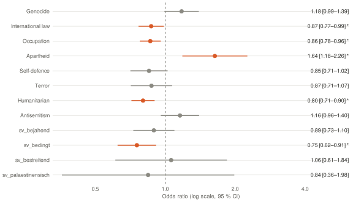
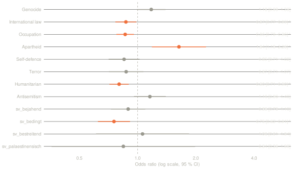
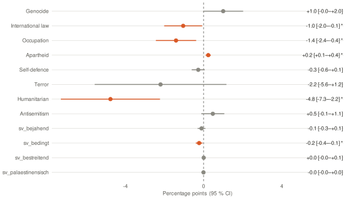
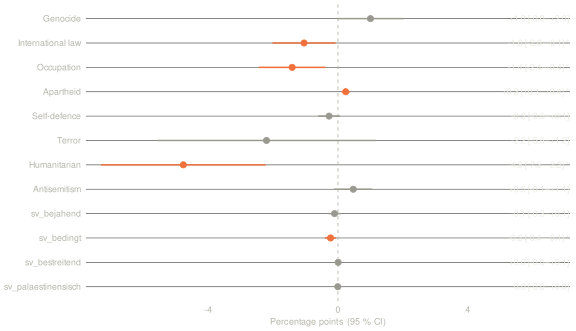
Simple model (uncorrected standard errors), selectable by country
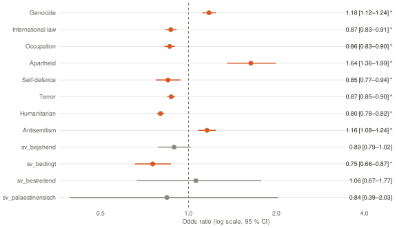
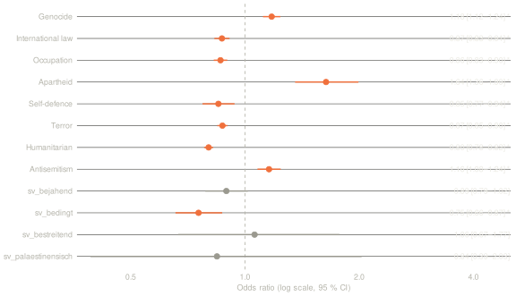
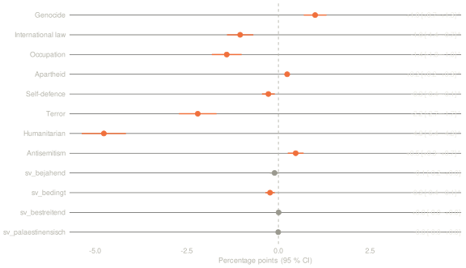
Model with articles from Belgium only: frame ~ private + period, reference: public service.
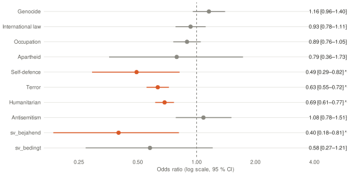
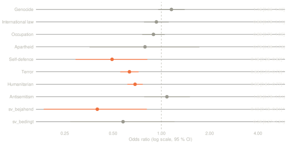
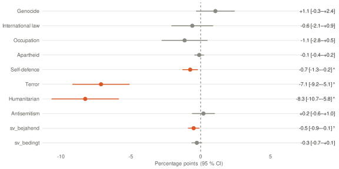
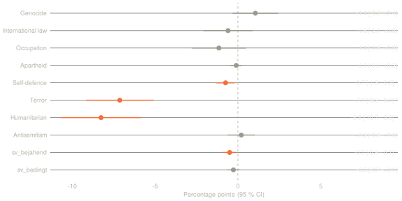
Model with articles from Bulgaria only: frame ~ private + period, reference: public service.
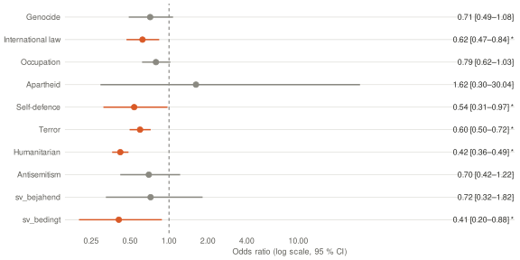
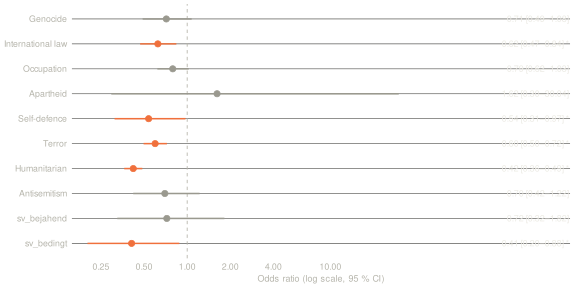
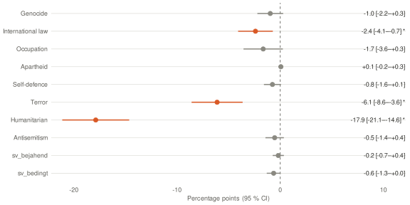
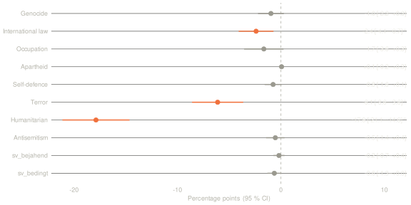
Model with articles from Germany only: frame ~ private + period, reference: public service.
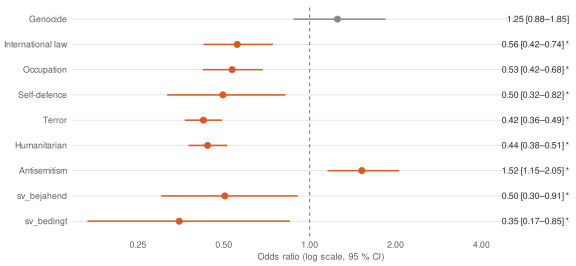
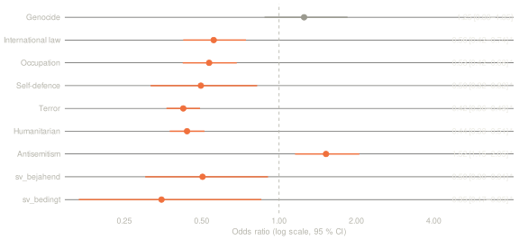
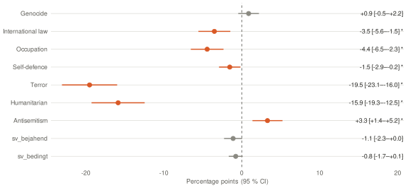
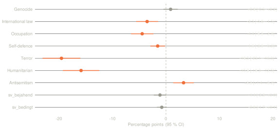
Model with articles from Denmark only: frame ~ private + period, reference: public service.
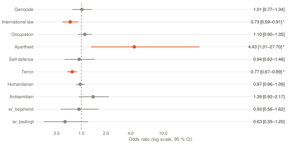
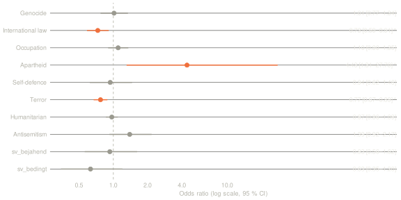
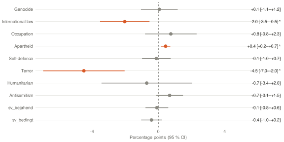
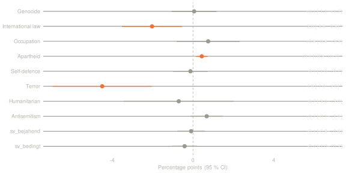
Model with articles from Estonia only: frame ~ private + period, reference: public service.
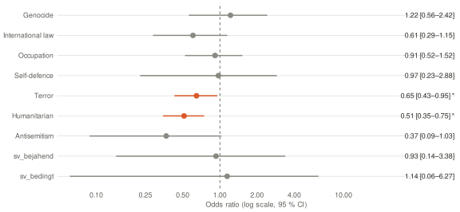
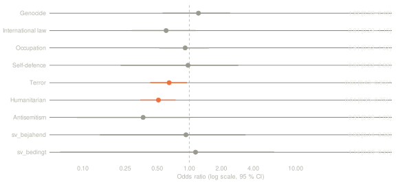
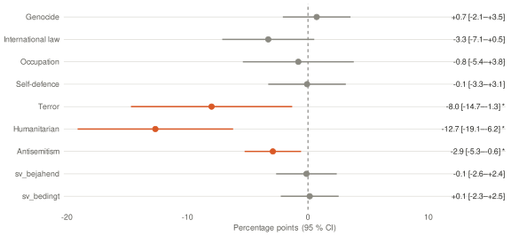
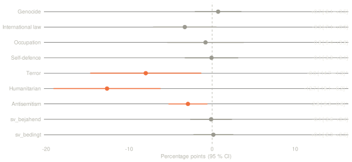
Model with articles from Finland only: frame ~ private + period, reference: public service.
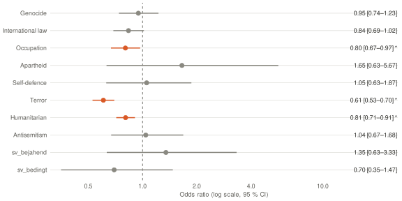
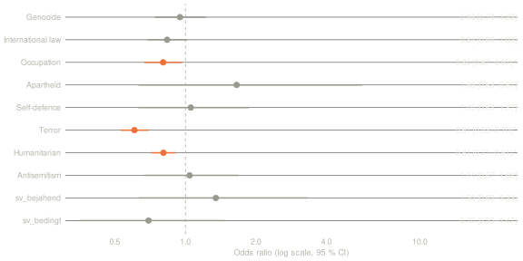
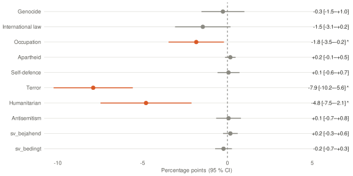
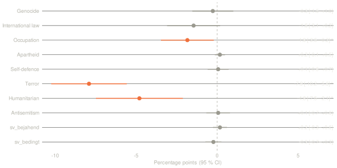
Model with articles from France only: frame ~ private + period, reference: public service.
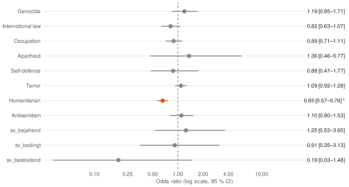
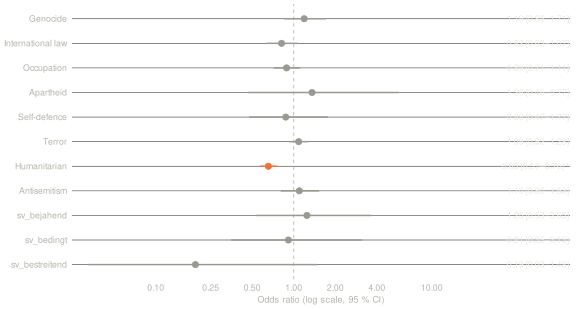
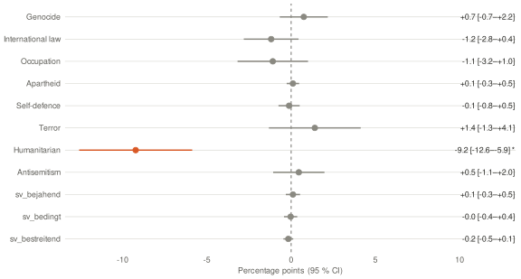
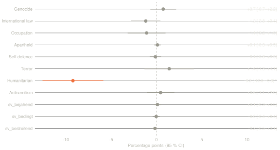
Model with articles from Ireland only: frame ~ private + period, reference: public service.
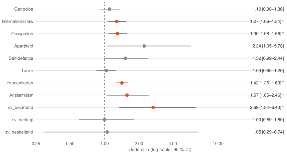
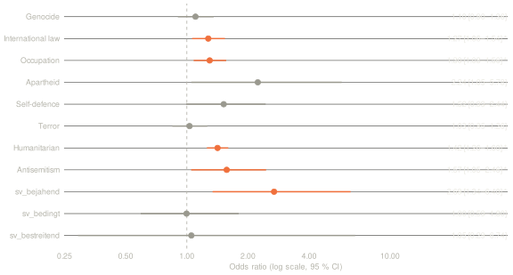
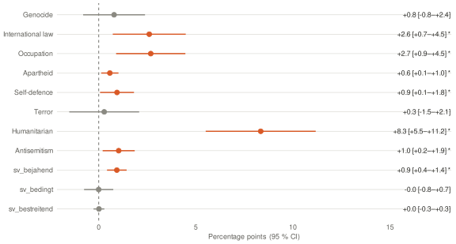
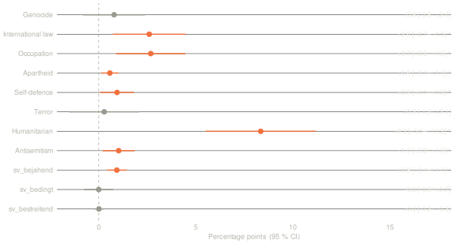
Model with articles from Italy only: frame ~ private + period, reference: public service.
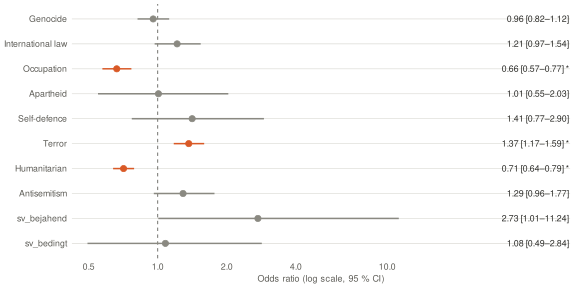
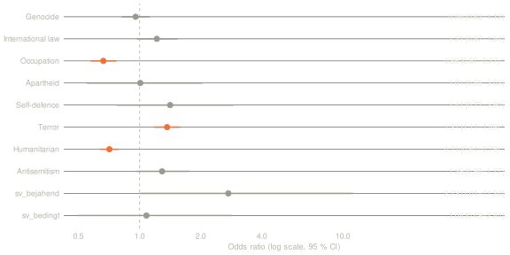
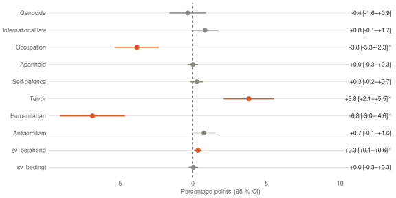
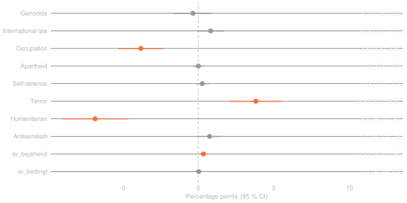
Model with articles from Croatia only: frame ~ private + period, reference: public service.
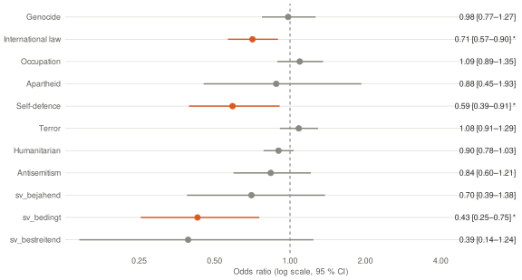
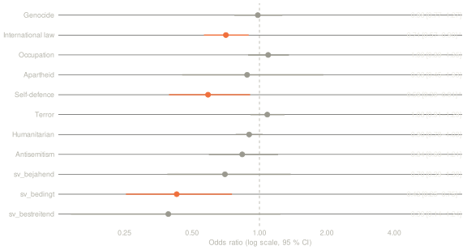
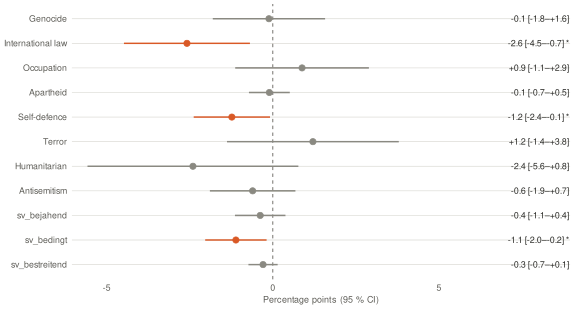
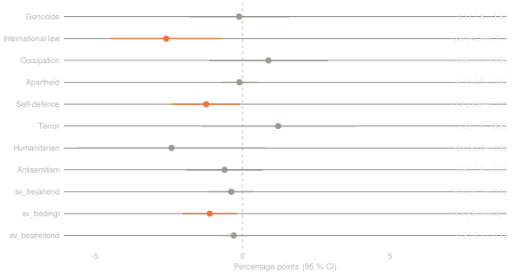
Model with articles from Latvia only: frame ~ private + period, reference: public service.
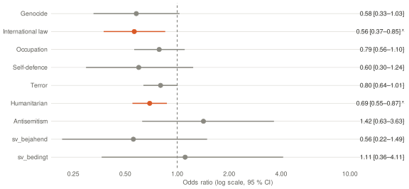
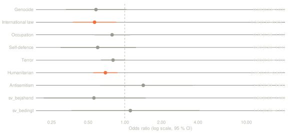
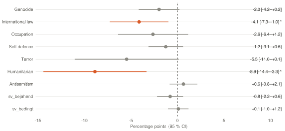
Model with articles from Lithuania only: frame ~ private + period, reference: public service.
Model with articles from Luxembourg only: frame ~ private + period, reference: public service.
Model with articles from Netherlands only: frame ~ private + period, reference: public service.
Model with articles from Norway only: frame ~ private + period, reference: public service.
Model with articles from Poland only: frame ~ private + period, reference: public service.
Model with articles from Portugal only: frame ~ private + period, reference: public service.
Model with articles from Sweden only: frame ~ private + period, reference: public service.
Model with articles from Switzerland only: frame ~ private + period, reference: public service.
Model with articles from Slovakia only: frame ~ private + period, reference: public service.
Model with articles from Slovenia only: frame ~ private + period, reference: public service.
Model with articles from Spain only: frame ~ private + period, reference: public service.
Model with articles from South Africa only: frame ~ private + period, reference: public service.
Model with articles from Czechia only: frame ~ private + period, reference: public service.
Model with articles from Hungary only: frame ~ private + period, reference: public service.
Model with articles from United Kingdom only: frame ~ private + period, reference: public service.
Model with articles from Austria only: frame ~ private + period, reference: public service.
Multilevel model (countries and sub-national groups)
As in the tutorial (ch. 16), with a third level: glmer(frame ~ private + period + (1 | country) + (1 | country:group)). Articles are nested in groups (nationwide outlets; regional and minority outlets such as Scotland, Catalonia or Russian speakers in Latvia; in the UK the nationwide group is England/UK-wide), groups in countries. The random effects make the uncertainty depend on the number of countries and groups, not on the number of articles; country-level variables such as recognition stay at country level. Wald CIs; LR test against the model without the variable in the tooltip.
ICC: share of variance between countries
Share of variance between groups within countries
Fast approximation (nAGQ = 0); checked against the more exact Laplace estimate, differences in the second decimal place.
Logit: recognition of Palestine as a stateLogit ↗Data ↗
One logit model per frame (frame yes/no ~ country recognises Palestine today + period + ownership). Odds ratio > 1: outlets from recognising countries use the frame more often. Recognises (16): Bulgaria, France, Ireland, Luxembourg, Malta, Poland, Portugal, Romania, Sweden, Slovakia, Slovenia, Spain, Czechia, Hungary, United Kingdom, Cyprus. Does not recognise (12): Belgium, Denmark, Germany, Estonia, Finland, Greece, Italy, Croatia, Latvia, Lithuania, Netherlands, Austria. Belgium counts as “no”: announced in September 2025, not yet formally completed. Czechia and Hungary: recognition of 1988, questioned by the current governments.
Caution: the variable is measured at country level, and articles from the same country are not independent. The confidence intervals of this simple logit are therefore too narrow; the multilevel model below is authoritative.
Share of articles with frame (%)
Multilevel model (countries and sub-national groups)
As in the tutorial (ch. 16), with a third level: glmer(frame ~ recognition + period + ownership + (1 | country) + (1 | country:group)). Articles are nested in groups (nationwide outlets; regional and minority outlets such as Scotland, Catalonia or Russian speakers in Latvia; in the UK the nationwide group is England/UK-wide), groups in countries. The random effects make the uncertainty depend on the number of countries and groups, not on the number of articles; country-level variables such as recognition stay at country level. Wald CIs; LR test against the model without the variable in the tooltip.
ICC: share of variance between countries
Share of variance between groups within countries
Fast approximation (nAGQ = 0); checked against the more exact Laplace estimate, differences in the second decimal place.
Interpretation. Outlets in countries that recognise Palestine compared with outlets in countries that do not, same period and ownership (multilevel model, authoritative; AME in percentage points). None of the effects is statistically clear (all 95 % confidence intervals include 0). Compared with the simple logit above, 3 of 12 frames lead to the same conclusion; different verdict for Genocide, International law, Occupation, Apartheid, Self-defence, Humanitarian, Antisemitism, sv_bejahend, sv_bedingt. With only 28 countries, a country-level effect rests on few cases; see the jackknife under “Regression diagnostics”.
Evidence per country: anerkennung/anerkennung_palaestina.csv.
Regression diagnosticsDiagnostics ↗
For the logit private vs. public service (frame ~ private + period + country), per frame the checks from the tutorial (ch. 14) and the measures usual for logit models. Green = unremarkable, yellow = conspicuous. Where a remedy exists, it has been applied and is reported here.
| Frame | Hits | Separation | GVIF1/(2df) private | R² McFadden | R² Nagelkerke | AUC | Hosmer–Lemeshow p | Binned residuals within ±2 SE | max. Cook's D | OR private | p | p robust (HC0) | p clustered by outlet [95 % CI] |
|---|---|---|---|---|---|---|---|---|---|---|---|---|---|
| Genocide | 21,735 | no | 1.10 | 0.089 | 0.112 | 0.73 | 0.003 | 75 % | 0.002 | 1.18 | < 0.001 | < 0.001 | 0.063 [0.99; 1.39] |
| International law | 23,379 | no | 1.13 | 0.040 | 0.051 | 0.65 | < 0.001 | 72 % | 0.001 | 0.87 | < 0.001 | < 0.001 | 0.029 [0.77; 0.99] |
| Occupation | 30,205 | no | 1.13 | 0.024 | 0.032 | 0.61 | < 0.001 | 68 % | 0.001 | 0.86 | < 0.001 | < 0.001 | 0.005 [0.78; 0.96] |
| Apartheid | 1,728 | yes → fixed | 1.06 | 0.047 | 0.049 | 0.70 | 0.248 | 73 % | 0.019 | 1.64 | < 0.001 | < 0.001 | 0.003 [1.18; 2.26] |
| Self-defence | 4,800 | no | 1.13 | 0.048 | 0.052 | 0.70 | 0.862 | 80 % | 0.009 | 0.85 | 0.001 | < 0.001 | 0.087 [0.71; 1.02] |
| Terror | 63,267 | no | 1.11 | 0.070 | 0.108 | 0.69 | < 0.001 | 57 % | 0.001 | 0.87 | < 0.001 | < 0.001 | 0.191 [0.71; 1.07] |
| Humanitarian | 92,755 | no | 1.12 | 0.024 | 0.042 | 0.60 | < 0.001 | 62 % | 0.000 | 0.80 | < 0.001 | < 0.001 | < 0.001 [0.71; 0.90] |
| Antisemitism | 10,563 | yes → fixed | 1.08 | 0.061 | 0.070 | 0.70 | 0.029 | 80 % | 0.003 | 1.16 | < 0.001 | < 0.001 | 0.132 [0.96; 1.40] |
| sv_bejahend | 2,641 | yes → fixed | 1.12 | 0.036 | 0.038 | 0.68 | 0.064 | 81 % | 0.019 | 0.89 | 0.086 | 0.082 | 0.277 [0.73; 1.10] |
| sv_bedingt | 2,162 | no | 1.14 | 0.065 | 0.067 | 0.74 | 0.003 | 72 % | 0.018 | 0.75 | < 0.001 | < 0.001 | 0.004 [0.62; 0.91] |
| sv_bestreitend | 265 | yes → fixed | 1.20 | 0.057 | 0.057 | 0.75 | 0.568 | 34 % | 0.022 | 1.06 | 0.815 | 0.808 | 0.837 [0.61; 1.84] |
| sv_palaestinensisch | 61 | yes → fixed | 1.09 | 0.069 | 0.069 | 0.80 | 0.431 | 18 % | 0.047 | 0.84 | 0.682 | 0.652 | 0.697 [0.36; 1.98] |
What the columns mean and what was applied
- Separation: countries or periods without a single hit produce infinite coefficients. Remedy applied: these groups are removed from the model per frame (they contribute nothing to the effect of “private”). Applies to all fixed-effects logit models in the dashboard.
- Multicollinearity: GVIF1/(2df) < √5 ≈ 2.24 corresponds to the rule of thumb VIF < 5 from the tutorial.
- Pseudo-R² and AUC: how well period, country and ownership predict whether a frame occurs; AUC from 0.7 acceptable, from 0.8 good. Low values are to be expected here: whether an article uses a frame depends mainly on the occasion, not on these three characteristics.
- Hosmer–Lemeshow: p < 0.05 means predicted and observed shares differ. With tens of thousands of articles the test becomes significant even for small deviations; the binned residuals are more informative.
- Binned residuals (Gelman/Hill): target ≥ 95 % of bins within ±2 SE. Below that, the model is missing structure, here mainly differences between outlets of the same country. Remedy: multilevel model with a random effect per outlet (see “Political leaning”) and standard errors clustered by outlet (last column).
- Influential cases: threshold as in the tutorial, Cook's D > 1; the rule of thumb 4/n is useless for rare events, because almost every article with a hit exceeds it. If a case exceeds 1, the model is re-estimated without it.
- Robust standard errors:
sandwich::vcovHCas in the tutorial. Because articles from the same outlet are not independent, additionally clustered by outlet (vcovCL). The clustered column is authoritative; yellow means the significance verdict flips compared with the simple p-value.
Jackknife: multilevel recognition model leaving out one country at a time
Does a single country drive the result? Per frame the smallest and largest odds ratio when one country at a time is left out. “Sign stable” = the direction stays the same whichever country is left out.
| Frame | OR min. | OR max. | Sign stable | Models |
|---|---|---|---|---|
| Genocide | 1.09 (without Spain) | 1.25 (without Bulgaria) | yes | 28 |
| International law | 1.16 (without Malta) | 1.26 (without Bulgaria) | yes | 28 |
| Occupation | 1.11 (without Slovenia) | 1.20 (without Netherlands) | yes | 28 |
| Apartheid | 0.81 (without Slovenia) | 0.98 (without Slovakia) | yes | 28 |
| Self-defence | 1.13 (without Italy) | 1.25 (without France) | yes | 28 |
| Terror | 0.84 (without Greece) | 1.07 (without Latvia) | no | 28 |
| Humanitarian | 1.13 (without Greece) | 1.27 (without Lithuania) | yes | 28 |
| Antisemitism | 0.76 (without Greece) | 0.98 (without Germany) | yes | 28 |
| sv_bejahend | 1.02 (without Greece) | 1.14 (without Estonia) | yes | 28 |
| sv_bedingt | 1.27 (without Slovenia) | 1.42 (without France) | yes | 28 |
| sv_bestreitend | 1.24 (without Italy) | 1.67 (without Croatia) | yes | 28 |
| sv_palaestinensisch | 0.56 (without Germany) | 0.75 (without Denmark) | yes | 28 |
Interpretation. The models discriminate poorly to acceptably (AUC 0.60–0.80): ownership, period and country explain only a small part of whether an article uses a frame, as expected. For 12 of 12 frames fewer than 95 % of the binned residuals lie within ±2 SE – the models miss structure between outlets, which is why the clustered standard errors and the multilevel models are authoritative. Separation was fixed for Apartheid, Antisemitism, sv_bejahend, sv_bestreitend, sv_palaestinensisch. Clustering by outlet changes the significance verdict for Genocide, Self-defence, Terror, Antisemitism; the clustered result applies there. Jackknife: the direction of the recognition effect stays the same whichever country is left out for 11 of 12 frames; not for Terror, which therefore depend on single countries.
Regional and minority outlets: multilevel modelModel ↗Groups ↗
Do regional and minority outlets report differently from the nationwide outlets of the same country? One model per frame: frame ~ regional/minority outlet + private + period + (1 | country) + (1 | country:group). Odds ratio > 1 or AME > 0: regional and minority outlets use the frame more often than the nationwide outlets of their country. A group forms its own level if it has at least 30 articles and at least 100,000 inhabitants or speakers; smaller groups are left out of the multilevel models.
Interpretation. Regional and minority outlets compared with the nationwide outlets of the same country, same ownership and period (AME in percentage points). Clearly more often (p < 0.05): International law +2.1 pp (95 % CI +0.25 to +4.0, overall share 8.0 %); Self-defence +1.1 pp (95 % CI +0.46 to +1.7, overall share 1.6 %); sv_bedingt +0.59 pp (95 % CI +0.18 to +1.0, overall share 0.7 %); Apartheid +0.58 pp (95 % CI +0.14 to +1.0, overall share 0.6 %); sv_bejahend +0.48 pp (95 % CI +0.19 to +0.77, overall share 0.9 %). No clear difference (CI includes 0): Genocide, Occupation, Terror, Humanitarian, Antisemitism, sv_bestreitend, sv_palaestinensisch. The largest effect is International law with +2.1 percentage points. Effects below one percentage point (sv_bedingt, Apartheid, sv_bejahend) are statistically detectable with this many articles but substantively small.
Groups
| Country | Group | Articles | Population (approx.) | Own level |
|---|---|---|---|---|
| Belgium | nationwide | 4,940 | – | yes |
| Belgium | German-speaking | 964 | 78,000 | no |
| Denmark | nationwide | 5,930 | – | yes |
| Denmark | Faroe Islands | 1 | 55,000 | no |
| Denmark | Greenland | 73 | 57,000 | no |
| Estonia | nationwide | 911 | – | yes |
| Estonia | Russian-speaking | 613 | 380,000 | yes |
| Finland | nationwide | 5,760 | – | yes |
| Finland | Swedish-speaking | 1,096 | 290,000 | yes |
| France | nationwide | 7,788 | – | yes |
| France | Overseas: French Polynesia | 2 | 280,000 | no |
| France | Overseas: Guyane | 11 | 290,000 | no |
| France | Overseas: Martinique | 13 | 350,000 | no |
| France | Overseas: New Caledonia | 26 | 270,000 | no |
| France | Overseas: Réunion | 470 | 870,000 | yes |
| Italy | nationwide | 14,629 | – | yes |
| Italy | South Tyrol | 77 | 530,000 | yes |
| Croatia | nationwide | 7,275 | – | yes |
| Croatia | Serb | 48 | 120,000 | yes |
| Latvia | nationwide | 1,276 | – | yes |
| Latvia | Russian-speaking | 151 | 650,000 | yes |
| Lithuania | nationwide | 6,993 | – | yes |
| Lithuania | Polish-speaking | 18 | 180,000 | no |
| Lithuania | Russian-speaking | 438 | 140,000 | yes |
| Romania | nationwide | 6,460 | – | yes |
| Romania | Hungarian-speaking | 449 | 1,000,000 | yes |
| Slovakia | nationwide | 6,856 | – | yes |
| Slovakia | Hungarian-speaking | 1,579 | 420,000 | yes |
| Spain | nationwide | 12,388 | – | yes |
| Spain | Basque Country | 798 | 2,200,000 | yes |
| Spain | Galicia | 1,400 | 2,700,000 | yes |
| Spain | Catalonia | 1,859 | 8,000,000 | yes |
| United Kingdom | nationwide (England/UK-wide) | 19,994 | – | yes |
| United Kingdom | Northern Ireland | 380 | 1,900,000 | yes |
| United Kingdom | Scotland | 2,194 | 5,400,000 | yes |
| United Kingdom | Wales | 512 | 3,100,000 | yes |
| United Kingdom | Overseas: Bermuda | 70 | 64,000 | no |
| United Kingdom | Overseas: British Virgin Islands | 1 | 31,000 | no |
| Cyprus | nationwide | 6,635 | – | yes |
| Cyprus | Turkish Cypriot | 306 | 380,000 | yes |
Population: rounded orders of magnitude (censuses 2021/22, official estimates), still to be referenced. Caution: few groups per country; the group effect mixes region, language and the particular outlets selected.
Sources and verification: multilevel modelsModels ↗
As above for the frames, but the outcome is: the article attributes something to an actor in a sentence with “said”, “according to” etc., or it contains the caveat “could not be independently verified”. Random intercept per country, controlling for period.
Private (reference: public service)
Interpretation. Private compared with public service outlets of the same country and period: probability that an article cites the source (or contains the caveat), AME in percentage points. Clearly more often cited by private outlets (p < 0.05): News agencies +0.78 pp (95 % CI +0.45 to +1.1). Clearly less often cited by private outlets: Hamas −4.0 pp (95 % CI −4.6 to −3.4); UN −3.7 pp (95 % CI −4.3 to −3.1); IDF / military −2.8 pp (95 % CI −3.3 to −2.2); Gaza authorities −1.4 pp (95 % CI −1.8 to −1.1); Israeli government −1.3 pp (95 % CI −1.7 to −0.86); NGOs −0.65 pp (95 % CI −0.86 to −0.44); Palestinian Authority −0.46 pp (95 % CI −0.68 to −0.25). No clear difference (CI includes 0): Verification caveat. The largest effect is Hamas with −4.0 percentage points. Effects below one percentage point (News agencies, NGOs, Palestinian Authority) are statistically detectable with this many articles but substantively small.
Country recognises Palestine (additionally controlling for ownership)
Interpretation. Outlets in recognising compared with non-recognising countries, same ownership and period (AME in percentage points). None of the effects is statistically clear (all 95 % confidence intervals include 0).
Political leaning: multilevel modelsModels ↗Classification ↗
Only private outlets with a documented left–right classification (103 outlets from 28 countries, 133,304 articles; left 9,628, centre-left 37,063, centre 27,740, centre-right 49,068, right 9,805). Leaning as a number from 1 (left) to 5 (right); odds ratio per step to the right. Random intercepts per country and per outlet, controlling for period. OR < 1: the frame or source becomes rarer further to the right.
Frames
Interpretation. Change per step to the right on the five-point scale (left → right), private outlets of the same country and period (AME in percentage points per step). Clearly more frequent further right (p < 0.05): Terror +2.4 pp (95 % CI +0.54 to +4.4, overall share 21.6 %). Clearly less frequent further right: Humanitarian −2.3 pp (95 % CI −4.4 to −0.18, overall share 31.6 %); Genocide −1.8 pp (95 % CI −2.7 to −1.0, overall share 7.4 %); International law −1.3 pp (95 % CI −2.0 to −0.65, overall share 8.0 %); Occupation −1.3 pp (95 % CI −2.1 to −0.40, overall share 10.3 %); Apartheid −0.20 pp (95 % CI −0.31 to −0.08, overall share 0.6 %); Self-defence −0.17 pp (95 % CI −0.33 to −0.01, overall share 1.6 %); sv_bedingt −0.11 pp (95 % CI −0.20 to −0.02, overall share 0.7 %); sv_bestreitend −0.02 pp (95 % CI −0.04 to −0.00, overall share 0.1 %). No clear difference (CI includes 0): Antisemitism, sv_bejahend, sv_palaestinensisch. The largest effect is Terror with +2.4 percentage points. Effects below one percentage point (Apartheid, Self-defence, sv_bedingt, sv_bestreitend) are statistically detectable with this many articles but substantively small. From left to right (four steps) the difference is about four times the AME.
Sources and verification
Interpretation. Change per step to the right, as above, for sources and the verification caveat. Clearly less frequent further right: NGOs −0.24 pp (95 % CI −0.45 to −0.02). No clear difference (CI includes 0): IDF / military, Israeli government, Gaza authorities, Hamas, Palestinian Authority, UN, News agencies, Verification caveat. The largest effect is NGOs with −0.24 percentage points. Effects below one percentage point (NGOs) are statistically detectable with this many articles but substantively small.
Caution: leaning varies only between outlets; with the random effect per outlet the information rests on the number of outlets, not of articles. “right” is barely populated so far. The frame “Self-defence” measures whether self-defence is invoked or discussed in the Israeli context (affirmative or conditional); denials (“this is not self-defence”) and sentences about the Palestinians’ right to defend themselves do not count. The frame “Self-defence denied” counts exactly those denials of Israel’s self-defence.
Event study: weeks around recognitionEvent study ↗
For each country that recognised Palestine during the study period, the articles ±10 weeks around the recognition date; comparison: countries without recognition in the same calendar weeks. Shown: share in the recognising countries minus share in the comparison group, in percentage points, per week relative to recognition (week 0 = day of recognition to +6 days). Cohorts: 2025-09-22: France, Luxembourg, Malta (3,067 articles); 2024-05-28: Ireland, Spain (3,530 articles); 2025-09-21: Portugal, United Kingdom (7,490 articles); 2024-06-04: Slovenia (694 articles).
too few weeks with data
Interpretation. Largest change in the difference to the comparison countries between the ten weeks before and weeks 0 to +3: Source: Hamas +3.3 pp (before: +0.38 pp); Genocide −2.8 pp (before: +5.4 pp); Antisemitism +1.7 pp (before: −0.39 pp); Occupation −1.4 pp (before: +0.90 pp). This is descriptive, without a significance test; the difference-in-differences model in the next section tests the before/after comparison. A change that is already visible before week 0 points to the events around the recognition rather than to the recognition itself.
Gaps: the study periods do not cover every week (e.g. June/July 2024). A jump at week 0 with an otherwise flat course would point to a link with recognition; a trend that starts earlier speaks against it. Weeks with few articles fluctuate strongly (case numbers in the tooltip).
Before/after: new recognitionsDiD ↗
Did outlets report differently after their country recognised Palestine? Countries that recognised during the study period: Spain and Ireland (28 May 2024), Slovenia (4 June 2024), United Kingdom and Portugal (21 Sep 2025), France, Luxembourg and Malta (22 Sep 2025). Difference-in-differences with staggered recognition: one logit per frame (frame ~ after recognition + country + period); all other countries serve as comparison, country and period as fixed effects. Odds ratio > 1: after recognition more frequent than expected from the comparison. 49,184 articles before, 18,482 after.
Interpretation. Articles after their country’s recognition compared with what the comparison countries in the same period lead one to expect (difference-in-differences, AME in percentage points). Clearly more often after recognition (p < 0.05): Genocide +2.1 pp (95 % CI +1.6 to +2.6, overall share 7.4 %); Antisemitism +0.50 pp (95 % CI +0.05 to +1.0, overall share 3.6 %). Clearly less often after recognition: Humanitarian −2.5 pp (95 % CI −3.4 to −1.7, overall share 31.6 %); Terror −2.0 pp (95 % CI −2.9 to −1.2, overall share 21.6 %); International law −1.8 pp (95 % CI −2.2 to −1.3, overall share 8.0 %); Occupation −0.79 pp (95 % CI −1.3 to −0.24, overall share 10.3 %); Self-defence −0.62 pp (95 % CI −0.85 to −0.38, overall share 1.6 %); sv_bedingt −0.45 pp (95 % CI −0.57 to −0.32, overall share 0.7 %). No clear difference (CI includes 0): Apartheid, sv_bejahend, sv_bestreitend. Not estimable (too few hits or separation): sv_palaestinensisch. The largest effect is Humanitarian with −2.5 percentage points. Effects below one percentage point (Occupation, Self-defence, Antisemitism, sv_bedingt) are statistically detectable with this many articles but substantively small. See the caution below: this is a temporal association, not a proven effect of recognition.
Share of articles with frame per country, before and after (%)
Caution: the recognitions coincide with events (Rafah in May 2024, famine and the UN commission in September 2025, ceasefire in October 2025). The period effects capture this only roughly, because F5 spans the days before and after 21/22 Sep 2025. An effect of recognition itself is therefore not established, only a temporal association.
Supervised ML: predicting ownershipcaret ↗
Can frames, sources and verification caveats tell whether an article comes from a public service outlet? As in the course: createDataPartition 70/30 (2,102 training, 899 test), caret::train with 5-fold cross-validation, downsampled in training (public 335, private 2,666; stratified sample of 3,001 out of 293,103 articles). Always guessing “private” would give 88.9 % accuracy – so look at kappa, balanced accuracy and F1 (positive class: public service).
| Model | Accuracy | Kappa | Balanced acc. | F1 | Recall public |
|---|---|---|---|---|---|
| Generalized Linear Model | 59.7 % | 0.02 | 52.0 % | 0.19 | 42.0 % |
| k-Nearest Neighbors | 50.6 % | 0.01 | 51.2 % | 0.19 | 52.0 % |
| nb | Required packages are missing: klaR | ||||
| Random Forest | 59.7 % | 0.00 | 50.2 % | 0.17 | 38.0 % |
Confusion matrix random forest (test data)
| true public | true private | |
|---|---|---|
| predicted public | 38 | 300 |
| predicted private | 62 | 499 |
varImp random forest
Interpretation. The best model (Generalized Linear Model) reaches kappa = 0.02 – slight agreement (Landis/Koch) – and a balanced accuracy of 52.0 % (chance: 50 %). Accuracy alone is misleading here because of the class imbalance. Whether an article comes from a public service or a private outlet can hardly be read from its frames and sources; the most important features are Humanitarian, UN, IDF / military. This matches the small AMEs in the logit models.
Text and data quality
Typical words by periodLog ratio ↗
Words that are clearly more frequent in one period than in the rest (weighted log ratio, at least 5 hits).
hamas israel hospital attack conflict civilians strip saturday citizens attacks fuel terrorist ground border
court unrwa south africa genocide rafah january icj justice february war palestinians agency hague
rafah university students eurovision universities campus arrest ireland palestine court warrants protests protesters icc
polio haniyeh killed ismail harris israeli leader tehran bank west school kamala vaccination august
gaza city state palestine famine september recognize trump recognition plan france minister assembly food
trump peace donald flotilla plan agreement trump's ceasefire hostages sharm president bodies el-sheikh sumud
christmas gaza aid israeli ceasefire march killed four report sexual kozlov argamani ramadan hostages
Data quality by outletParsing ↗
Relevant URLs of the URL list, how many are stored as articles and how many of those have a text of at least 300 characters (URL comparison). Text ok = share of the outlet’s articles with at least 300 characters; paywall = flag from JSON-LD or short text. The problem column shows why an outlet stopped: HTTP 403 blocks (Cloudflare etc.) are not circumvented: blocked outlets stay in the sample as a documented gap (low retrieval shown openly), and nobody is contacted to obtain their texts.
Removed before all dictionary analyses: sentences that appear verbatim in at least 15 articles of the same outlet (teasers, menus, image credits). Affected: FAZ (139 sentences), Daily Jang (91 sentences), TRT Haber (64 sentences), The Times of India (58 sentences), Pravda (54 sentences), Aftonbladet (52 sentences), Observador (45 sentences), Corriere della Sera (36 sentences), Le Figaro (33 sentences), NRK (32 sentences), Die Welt (31 sentences), Fox News (30 sentences), Moskowski Komsomolez (28 sentences), 15min (27 sentences), VilaWeb (27 sentences).
| Outlet | Country | relevant URLs | stored | with text | articles | text ok | paywall | problem |
|---|---|---|---|---|---|---|---|---|
| Al-Shorouk | Egypt | 36,148 | 36,148 | 32,724 | 36,148 | 91 % | 15 % | |
| Youm7 | Egypt | 28,825 | 28,825 | 28,225 | 28,825 | 98 % | 13 % | |
| Infobae | Argentina | 27,226 | 27,199 | 27,141 | 27,199 | 100 % | 1 % | |
| United Daily News | Taiwan | 25,550 | 0 | 0 | 0 | 0 % | 0 % | |
| TRT Haber | Turkey | 20,355 | 12,205 | 9,899 | 12,205 | 81 % | 26 % | |
| Proto Thema | Greece | 20,139 | 13,363 | 12,296 | 13,363 | 92 % | 9 % | |
| Al-Ghad | Jordan | 18,813 | 0 | 0 | 0 | 0 % | 0 % | |
| The Times of India | India | 17,733 | 14,067 | 13,883 | 14,067 | 99 % | 12 % | |
| The Independent | United Kingdom | 17,051 | 11,927 | 11,576 | 11,927 | 97 % | 14 % | Paket ohne Treffer, 190 Fehler (Sperre?) |
| Toronto Star | Canada | 16,794 | 0 | 0 | 0 | 0 % | 0 % | |
| Al-Rai (Kuwait) | Kuwait | 15,315 | 0 | 0 | 0 | 0 % | 0 % | |
| Rzeczpospolita | Poland | 13,869 | 12,938 | 12,930 | 12,938 | 100 % | 87 % | |
| MTV Uutiset | Finland | 13,552 | 13,537 | 13,371 | 13,537 | 99 % | 6 % | |
| Klix.ba | Bosnia and Herzegovina | 13,189 | 5,083 | 5,032 | 5,083 | 99 % | 6 % | |
| Aftonbladet | Sweden | 12,060 | 9,514 | 9,462 | 9,514 | 99 % | 5 % | |
| The National (VAE) | United Arab Emirates | 11,843 | 0 | 0 | 0 | 0 % | 0 % | |
| Fox News | United States | 11,773 | 8,681 | 8,614 | 8,681 | 99 % | 23 % | |
| 15min | Lithuania | 11,341 | 7,785 | 6,477 | 7,785 | 83 % | 39 % | |
| Daily Mail | United Kingdom | 10,959 | 10,936 | 10,916 | 10,936 | 100 % | 22 % | |
| Sabah | Turkey | 10,314 | 7,315 | 6,874 | 7,315 | 94 % | 17 % | |
| Berlingske | Denmark | 10,307 | 10,263 | 9,801 | 10,263 | 95 % | 27 % | |
| Dnevni avaz | Bosnia and Herzegovina | 10,069 | 4,897 | 4,791 | 4,897 | 98 % | 6 % | |
| Moskowski Komsomolez | Russia | 9,696 | 9,674 | 9,674 | 9,674 | 100 % | 20 % | |
| CartaCapital | Brazil | 9,555 | 8,057 | 8,053 | 8,057 | 100 % | 1 % | |
| Liberty Times | Taiwan | 9,524 | 0 | 0 | 0 | 0 % | 0 % | |
| The Guardian | United Kingdom | 9,514 | 8,186 | 6,968 | 8,186 | 85 % | 18 % | |
| Politis | Cyprus | 8,763 | 5,882 | 5,882 | 5,882 | 100 % | 0 % | |
| Daily Jang | Pakistan | 8,750 | 8,746 | 7,904 | 8,746 | 90 % | 22 % | |
| Mainichi Shimbun | Japan | 8,614 | 6,837 | 4,413 | 6,837 | 65 % | 85 % | |
| Die Welt | Germany | 8,336 | 5,997 | 5,997 | 5,997 | 100 % | 14 % | |
| Pravda | Slovakia | 8,262 | 8,177 | 8,126 | 8,177 | 99 % | 4 % | |
| la Repubblica | Italy | 8,198 | 8,035 | 7,809 | 8,035 | 97 % | 62 % | |
| Prensa Latina | Cuba | 8,097 | 0 | 0 | 0 | 0 % | 0 % | |
| The New York Times | United States | 8,021 | 351 | 351 | 351 | 100 % | 76 % | Paket ohne Treffer, 200 Fehler (Sperre?) |
| Dagbladet | Norway | 7,784 | 3,699 | 2,892 | 3,699 | 78 % | 35 % | |
| Petra News Agency | Jordan | 7,764 | 0 | 0 | 0 | 0 % | 0 % | |
| Report.az | Azerbaijan | 7,656 | 0 | 0 | 0 | 0 % | 0 % | |
| SBS News | Australia | 7,337 | 0 | 0 | 0 | 0 % | 0 % | |
| Der Tagesspiegel | Germany | 7,187 | 4,562 | 4,525 | 4,562 | 99 % | 47 % | |
| FAZ | Germany | 6,938 | 4,544 | 4,533 | 4,544 | 100 % | 79 % | |
| Al Khaleej | United Arab Emirates | 6,868 | 0 | 0 | 0 | 0 % | 0 % | |
| La Nación | Argentina | 6,572 | 6,542 | 6,535 | 6,542 | 100 % | 88 % | |
| Le Figaro | France | 6,408 | 6,324 | 6,236 | 6,324 | 99 % | 40 % | |
| 24 Chasa | Bulgaria | 6,117 | 6,117 | 6,117 | 6,117 | 100 % | 3 % | |
| El Nuevo Diario (Dominican Republic) | Dominican Republic | 6,051 | 0 | 0 | 0 | 0 % | 0 % | |
| Efimerida ton Syntakton | Greece | 6,018 | 3,183 | 3,183 | 3,183 | 100 % | 0 % | |
| Il Giornale | Italy | 6,010 | 5,564 | 5,215 | 5,564 | 94 % | 11 % | |
| El País | Spain | 5,993 | 5,923 | 5,787 | 5,923 | 98 % | 74 % | |
| Index.hr | Croatia | 5,963 | 5,963 | 5,950 | 5,963 | 100 % | 3 % | |
| Express Tribune | Pakistan | 5,953 | 0 | 0 | 0 | 0 % | 0 % | Paket ohne Treffer, 200 Fehler (Sperre?) |
| teleSUR | Venezuela | 5,948 | 0 | 0 | 0 | 0 % | 0 % | |
| Observador | Portugal | 5,933 | 4,813 | 4,813 | 4,813 | 100 % | 17 % | |
| Cumhuriyet | Turkey | 5,715 | 3,535 | 3,489 | 3,535 | 99 % | 10 % | |
| HotNews | Romania | 5,675 | 4,288 | 4,288 | 4,288 | 100 % | 1 % | |
| LRT | Lithuania | 5,600 | 4,026 | 4,026 | 4,026 | 100 % | 3 % | |
| Hürriyet | Turkey | 5,427 | 5,293 | 5,288 | 5,293 | 100 % | 0 % | |
| Le Monde | France | 5,359 | 5,359 | 0 | 5,359 | 0 % | 100 % | |
| SR Ekot | Sweden | 5,287 | 3,142 | 2,358 | 3,142 | 75 % | 73 % | |
| N1 Srbija | Serbia | 5,172 | 2,589 | 2,432 | 2,589 | 94 % | 12 % | |
| ABC | Spain | 5,077 | 5,005 | 5,005 | 5,005 | 100 % | 37 % | |
| Al Bayan | United Arab Emirates | 5,019 | 0 | 0 | 0 | 0 % | 0 % | |
| Štandard | Slovakia | 4,995 | 3,088 | 3,088 | 3,088 | 100 % | 42 % | |
| Onet | Poland | 4,984 | 3,459 | 3,303 | 3,459 | 95 % | 35 % | |
| Danas | Serbia | 4,975 | 2,641 | 2,641 | 2,641 | 100 % | 3 % | |
| El Comercio (Peru) | Peru | 4,975 | 0 | 0 | 0 | 0 % | 0 % | |
| Svenska Dagbladet | Sweden | 4,934 | 3,046 | 3,046 | 3,046 | 100 % | 91 % | |
| SME | Slovakia | 4,643 | 623 | 620 | 623 | 100 % | 6 % | |
| RTCG | Montenegro | 4,633 | 4,633 | 4,633 | 4,633 | 100 % | 0 % | |
| Delfi LT | Lithuania | 4,582 | 3,645 | 3,325 | 3,645 | 91 % | 26 % | |
| Blic | Serbia | 4,576 | 2,540 | 2,540 | 2,540 | 100 % | 1 % | |
| Hespress | Morocco | 4,545 | 2,751 | 2,688 | 2,751 | 98 % | 32 % | |
| The Hindu | India | 4,487 | 4,478 | 4,399 | 4,478 | 98 % | 41 % | |
| SIC Notícias | Portugal | 4,475 | 147 | 147 | 147 | 100 % | 2 % | |
| NRK | Norway | 4,454 | 2,961 | 2,716 | 2,961 | 92 % | 21 % | |
| Jutarnji list | Croatia | 4,424 | 3,364 | 3,364 | 3,364 | 100 % | 1 % | |
| 8am | Afghanistan | 4,415 | 1,612 | 1,612 | 1,612 | 100 % | 1 % | |
| Clarín | Argentina | 4,407 | 3,677 | 3,666 | 3,677 | 100 % | 16 % | |
| The Indian Express | India | 4,346 | 4,334 | 4,332 | 4,334 | 100 % | 38 % | |
| Daily Sabah | Turkey | 4,345 | 4,343 | 4,328 | 4,343 | 100 % | 1 % | |
| Der Standard | Austria | 4,301 | 4,298 | 4,298 | 4,298 | 100 % | 12 % | |
| 24.hu | Hungary | 4,295 | 4,294 | 3,975 | 4,294 | 93 % | 15 % | |
| Het Laatste Nieuws | Belgium | 4,293 | 4,293 | 0 | 4,293 | 0 % | 100 % | |
| Okaz | Saudi Arabia | 4,274 | 0 | 0 | 0 | 0 % | 0 % | |
| Il Fatto Quotidiano | Italy | 4,259 | 4,170 | 4,170 | 4,170 | 100 % | 3 % | |
| Aktuality.sk | Slovakia | 4,198 | 2,683 | 2,676 | 2,683 | 100 % | 5 % | |
| Kommersant | Russia | 4,191 | 4,160 | 4,157 | 4,160 | 100 % | 5 % | |
| Trend | Azerbaijan | 4,151 | 0 | 0 | 0 | 0 % | 0 % | |
| NU.nl | Netherlands | 4,097 | 4,097 | 0 | 4,097 | 0 % | 100 % | |
| Politika | Serbia | 4,096 | 4,092 | 4,089 | 4,092 | 100 % | 3 % | |
| Diario Libre | Dominican Republic | 4,093 | 0 | 0 | 0 | 0 % | 0 % | |
| 24sata | Croatia | 4,042 | 3,985 | 3,911 | 3,985 | 98 % | 10 % | |
| eldiario.es | Spain | 4,029 | 3,985 | 3,985 | 3,985 | 100 % | 60 % | |
| La Tercera | Chile | 4,002 | 0 | 0 | 0 | 0 % | 0 % | |
| Telegrafi | Kosovo | 3,968 | 1,472 | 1,471 | 1,472 | 100 % | 1 % | |
| Le Parisien | France | 3,921 | 0 | 0 | 0 | 0 % | 0 % | Paket ohne Treffer, 200 Verbindungs- ode |
| BreakingNews.ie | Ireland | 3,856 | 2,749 | 2,747 | 2,749 | 100 % | 0 % | |
| N1 Hrvatska | Croatia | 3,847 | 2,031 | 1,540 | 2,031 | 76 % | 29 % | |
| Evening Standard | United Kingdom | 3,843 | 2,528 | 2,525 | 2,528 | 100 % | 0 % | |
| Metrópoles | Brazil | 3,836 | 3,830 | 3,796 | 3,830 | 99 % | 2 % | |
| Die Presse | Austria | 3,826 | 2,745 | 2,473 | 2,745 | 90 % | 42 % | |
| VG | Norway | 3,765 | 2,975 | 2,369 | 2,975 | 80 % | 82 % | |
| Tunisie Numérique | Tunisia | 3,746 | 1,918 | 1,918 | 1,918 | 100 % | 35 % | |
| Cubadebate | Cuba | 3,683 | 0 | 0 | 0 | 0 % | 0 % | |
| O Globo | Brazil | 3,682 | 3,673 | 3,671 | 3,673 | 100 % | 1 % | |
| People's Daily | China | 3,655 | 42 | 42 | 42 | 100 % | 14 % | |
| Khaama Press | Afghanistan | 3,632 | 1,817 | 1,289 | 1,817 | 71 % | 30 % | |
| Digi24 | Romania | 3,612 | 2,060 | 2,046 | 2,060 | 99 % | 1 % | |
| RaiNews | Italy | 3,606 | 3,605 | 2,822 | 3,605 | 78 % | 31 % | |
| Magyar Nemzet | Hungary | 3,585 | 3,584 | 3,565 | 3,584 | 99 % | 40 % | |
| Dagens Nyheter | Sweden | 3,563 | 115 | 115 | 115 | 100 % | 84 % | |
| TV4 Nyheterna | Sweden | 3,527 | 3,526 | 3,512 | 3,526 | 100 % | 30 % | |
| Neue Zürcher Zeitung | Switzerland | 3,489 | 2,644 | 2,637 | 2,644 | 100 % | 100 % | |
| Kurier | Austria | 3,441 | 2,559 | 2,484 | 2,559 | 97 % | 97 % | |
| 20minutos | Spain | 3,417 | 3,384 | 3,384 | 3,384 | 100 % | 0 % | |
| wPolityce | Poland | 3,348 | 2,247 | 2,247 | 2,247 | 100 % | 0 % | |
| RTSH | Albania | 3,328 | 1,581 | 1,581 | 1,581 | 100 % | 0 % | |
| Free Malaysia Today | Malaysia | 3,324 | 0 | 0 | 0 | 0 % | 0 % | |
| ČT24 | Czechia | 3,322 | 2,037 | 1,287 | 2,037 | 63 % | 38 % | |
| El Tiempo | Colombia | 3,322 | 2,195 | 2,193 | 2,195 | 100 % | 13 % | |
| WAM | United Arab Emirates | 3,298 | 0 | 0 | 0 | 0 % | 0 % | |
| Kazinform | Kazakhstan | 3,281 | 0 | 0 | 0 | 0 % | 0 % | |
| The Daily Star (Bangladesh) | Bangladesh | 3,255 | 3,255 | 3,248 | 3,255 | 100 % | 9 % | |
| Delo | Slovenia | 3,198 | 2,420 | 2,133 | 2,420 | 88 % | 48 % | |
| Večernje novosti | Serbia | 3,188 | 3,188 | 3,188 | 3,188 | 100 % | 0 % | |
| ORF | Austria | 3,163 | 3,154 | 3,136 | 3,154 | 99 % | 5 % | |
| Aftenposten | Norway | 3,114 | 2,407 | 1,851 | 2,407 | 77 % | 55 % | |
| Le Soir | Belgium | 3,108 | 3,107 | 2,816 | 3,107 | 91 % | 22 % | |
| Dong-A Ilbo | South Korea | 3,099 | 0 | 0 | 0 | 0 % | 0 % | |
| ABC News (Australia) | Australia | 3,083 | 0 | 0 | 0 | 0 % | 0 % | |
| Cyprus Mail | Cyprus | 3,048 | 3,039 | 3,039 | 3,039 | 100 % | 1 % | |
| Novinky.cz | Czechia | 3,030 | 1,762 | 1,744 | 1,762 | 99 % | 2 % | |
| The National | United Kingdom | 3,019 | 3,013 | 3,013 | 3,013 | 100 % | 0 % | |
| Antena 3 CNN | Romania | 3,014 | 2,179 | 2,176 | 2,179 | 100 % | 1 % | |
| taz | Germany | 3,012 | 2,426 | 2,426 | 2,426 | 100 % | 0 % | |
| MKD.mk | North Macedonia | 2,979 | 1,283 | 1,283 | 1,283 | 100 % | 3 % | |
| BBC News | United Kingdom | 2,968 | 2,938 | 2,911 | 2,938 | 99 % | 16 % | |
| Ariana News | Afghanistan | 2,934 | 2,564 | 2,564 | 2,564 | 100 % | 1 % | |
| To Vima | Greece | 2,931 | 2,881 | 2,765 | 2,881 | 96 % | 7 % | |
| La Presse | Canada | 2,930 | 0 | 0 | 0 | 0 % | 0 % | |
| Sloboden Pečat | North Macedonia | 2,923 | 0 | 0 | 0 | 0 % | 0 % | Paket ohne Treffer, 200 Verbindungs- ode |
| Al-Rakoba | Sudan | 2,921 | 0 | 0 | 0 | 0 % | 0 % | Paket ohne Treffer, 200 Verbindungs- ode |
| Al-Zaman | Iraq | 2,915 | 0 | 0 | 0 | 0 % | 0 % | |
| The Irish Times | Ireland | 2,911 | 2,879 | 2,877 | 2,879 | 100 % | 1 % | |
| VietnamPlus | Vietnam | 2,887 | 1,547 | 1,547 | 1,547 | 100 % | 2 % | |
| Daily Tribune (Bahrain) | Bahrain | 2,854 | 0 | 0 | 0 | 0 % | 0 % | |
| Irish Examiner | Ireland | 2,853 | 2,843 | 2,840 | 2,843 | 100 % | 97 % | |
| The News International | Pakistan | 2,825 | 2,810 | 2,803 | 2,810 | 100 % | 3 % | |
| HRT Vijesti | Croatia | 2,821 | 1,892 | 1,892 | 1,892 | 100 % | 4 % | |
| La República (Peru) | Peru | 2,817 | 0 | 0 | 0 | 0 % | 0 % | |
| DR Nyheder | Denmark | 2,797 | 2,567 | 2,557 | 2,567 | 100 % | 1 % | |
| Borba | Montenegro | 2,788 | 1,318 | 1,314 | 1,318 | 100 % | 10 % | |
| Expressen | Sweden | 2,781 | 186 | 165 | 186 | 89 % | 17 % | |
| Új Szó | Slovakia | 2,713 | 1,571 | 1,571 | 1,571 | 100 % | 0 % | |
| Mediapool | Bulgaria | 2,713 | 1,346 | 1,346 | 1,346 | 100 % | 0 % | |
| Expresso | Portugal | 2,708 | 232 | 232 | 232 | 100 % | 29 % | |
| Irish Independent | Ireland | 2,680 | 216 | 216 | 216 | 100 % | 86 % | |
| Sözcü | Turkey | 2,664 | 2,154 | 2,138 | 2,154 | 99 % | 44 % | |
| RTV SLO | Slovenia | 2,658 | 2,658 | 2,658 | 2,658 | 100 % | 0 % | |
| La Jornada | Mexico | 2,623 | 0 | 0 | 0 | 0 % | 0 % | |
| Cooperativa | Chile | 2,621 | 0 | 0 | 0 | 0 % | 0 % | |
| TA3 | Slovakia | 2,572 | 2,570 | 2,018 | 2,570 | 79 % | 29 % | |
| Libération | France | 2,514 | 1 | 1 | 1 | 100 % | 0 % | Paket ohne Treffer, 200 Fehler (Sperre?) |
| Yle Uutiset | Finland | 2,504 | 2,504 | 2,482 | 2,504 | 99 % | 12 % | |
| Corriere della Sera | Italy | 2,484 | 2,472 | 2,470 | 2,472 | 100 % | 68 % | |
| The Globe and Mail | Canada | 2,459 | 0 | 0 | 0 | 0 % | 0 % | |
| Telex | Hungary | 2,445 | 2,442 | 2,228 | 2,442 | 91 % | 28 % | |
| Index | Hungary | 2,443 | 2,440 | 2,422 | 2,440 | 99 % | 2 % | |
| Tages-Anzeiger | Switzerland | 2,437 | 1,638 | 1,637 | 1,638 | 100 % | 36 % | |
| Libertatea | Romania | 2,416 | 405 | 341 | 405 | 84 % | 16 % | |
| Sky News | United Kingdom | 2,415 | 0 | 0 | 0 | 0 % | 0 % | |
| Charter97 | Belarus | 2,402 | 0 | 0 | 0 | 0 % | 0 % | |
| TVP Info | Poland | 2,397 | 1,457 | 980 | 1,457 | 67 % | 33 % | |
| Thanh Nien | Vietnam | 2,397 | 1,475 | 1,431 | 1,475 | 97 % | 4 % | |
| La Libre Belgique | Belgium | 2,395 | 4 | 2 | 4 | 50 % | 75 % | |
| Público | Portugal | 2,371 | 679 | 679 | 679 | 100 % | 27 % | |
| Milenio | Mexico | 2,368 | 1,470 | 1,113 | 1,470 | 76 % | 26 % | |
| Hürriyet Daily News | Turkey | 2,365 | 1,253 | 1,253 | 1,253 | 100 % | 0 % | |
| RTÉ News | Ireland | 2,360 | 2,185 | 2,125 | 2,185 | 97 % | 3 % | |
| tagesschau | Germany | 2,335 | 1,276 | 1,258 | 1,276 | 99 % | 2 % | |
| de Volkskrant | Netherlands | 2,331 | 2,331 | 0 | 2,331 | 0 % | 100 % | |
| Jyllands-Posten | Denmark | 2,329 | 1,244 | 1,127 | 1,244 | 91 % | 30 % | |
| El Día | Dominican Republic | 2,325 | 0 | 0 | 0 | 0 % | 0 % | |
| Dan | Montenegro | 2,315 | 2,303 | 2,126 | 2,303 | 92 % | 11 % | |
| Kronen Zeitung | Austria | 2,305 | 2,298 | 2,285 | 2,298 | 99 % | 9 % | |
| Ekstra Bladet | Denmark | 2,294 | 1,749 | 1,747 | 1,749 | 100 % | 1 % | |
| Ilta-Sanomat | Finland | 2,273 | 2,031 | 2,010 | 2,031 | 99 % | 5 % | |
| Proceso Digital | Honduras | 2,270 | 0 | 0 | 0 | 0 % | 0 % | |
| iDNES.cz | Czechia | 2,268 | 2,255 | 2,255 | 2,255 | 100 % | 0 % | |
| Večernji list | Croatia | 2,264 | 2,263 | 2,226 | 2,263 | 98 % | 17 % | |
| Heute | Austria | 2,231 | 1,139 | 892 | 1,139 | 78 % | 25 % | |
| VnExpress | Vietnam | 2,181 | 2,177 | 2,110 | 2,177 | 97 % | 3 % | |
| Gazeta Express | Kosovo | 2,179 | 2,178 | 1,635 | 2,178 | 75 % | 25 % | |
| El Nacional (Venezuela) | Venezuela | 2,169 | 0 | 0 | 0 | 0 % | 0 % | |
| Ukrainska Pravda | Ukraine | 2,113 | 0 | 0 | 0 | 0 % | 0 % | |
| MTVA Híradó | Hungary | 2,106 | 2,104 | 2,097 | 2,104 | 100 % | 5 % | |
| Sovetskaya Belorussiya | Belarus | 2,103 | 0 | 0 | 0 | 0 % | 0 % | |
| NOS | Netherlands | 2,098 | 2,096 | 1,429 | 2,096 | 68 % | 32 % | |
| Hufvudstadsbladet | Finland | 2,084 | 1,556 | 1,556 | 1,556 | 100 % | 50 % | |
| Sky TG24 | Italy | 2,081 | 1,545 | 1,545 | 1,545 | 100 % | 26 % | |
| Helsingin Sanomat | Finland | 2,033 | 1,956 | 1,952 | 1,956 | 100 % | 100 % | |
| De Standaard | Belgium | 2,018 | 417 | 417 | 417 | 100 % | 53 % | |
| Koha (MK) | North Macedonia | 2,008 | 859 | 829 | 859 | 97 % | 6 % | Paket ohne Treffer, 195 Verbindungs- ode |
| HCH | Honduras | 1,972 | 0 | 0 | 0 | 0 % | 0 % | |
| Știrile Pro TV | Romania | 1,968 | 1,962 | 1,962 | 1,962 | 100 % | 1 % | |
| Ara | Spain | 1,966 | 1,966 | 1,933 | 1,966 | 98 % | 99 % | |
| The Guardian Nigeria | Nigeria | 1,957 | 1,302 | 1,302 | 1,302 | 100 % | 2 % | |
| ERR | Estonia | 1,957 | 1,957 | 1,744 | 1,957 | 89 % | 13 % | |
| Asahi Shimbun | Japan | 1,956 | 1,940 | 1,937 | 1,940 | 100 % | 60 % | |
| Naiz | Spain | 1,954 | 1,948 | 1,948 | 1,948 | 100 % | 0 % | |
| Ammon News | Jordan | 1,946 | 0 | 0 | 0 | 0 % | 0 % | |
| De Telegraaf | Netherlands | 1,944 | 51 | 51 | 51 | 100 % | 0 % | |
| SRF | Switzerland | 1,907 | 1,543 | 1,473 | 1,543 | 95 % | 10 % | |
| Malaysiakini | Malaysia | 1,892 | 0 | 0 | 0 | 0 % | 0 % | |
| Politiken | Denmark | 1,886 | 1,866 | 1,864 | 1,866 | 100 % | 1 % | |
| Philippine Daily Inquirer | Philippines | 1,884 | 41 | 41 | 41 | 100 % | 5 % | |
| El Mundo | Spain | 1,881 | 1,868 | 1,867 | 1,868 | 100 % | 53 % | |
| Bernama | Malaysia | 1,879 | 0 | 0 | 0 | 0 % | 0 % | |
| Tengrinews | Kazakhstan | 1,873 | 0 | 0 | 0 | 0 % | 0 % | |
| VilaWeb | Spain | 1,843 | 1,192 | 1,192 | 1,192 | 100 % | 0 % | |
| NRC | Netherlands | 1,842 | 1,833 | 1,832 | 1,833 | 100 % | 100 % | |
| Interpressnews | Georgia | 1,842 | 0 | 0 | 0 | 0 % | 0 % | |
| NPR | United States | 1,832 | 0 | 0 | 0 | 0 % | 0 % | |
| MyJoyOnline | Ghana | 1,823 | 0 | 0 | 0 | 0 % | 0 % | |
| LSM | Latvia | 1,822 | 1,438 | 1,435 | 1,438 | 100 % | 1 % | Paket ohne Treffer, 12 Fehler (Sperre?) |
| Hoy | Dominican Republic | 1,789 | 0 | 0 | 0 | 0 % | 0 % | |
| TVN24 | Poland | 1,781 | 1,774 | 1,728 | 1,774 | 97 % | 4 % | |
| Le Temps | Switzerland | 1,765 | 790 | 790 | 790 | 100 % | 0 % | |
| National Post | Canada | 1,752 | 0 | 0 | 0 | 0 % | 0 % | |
| Excélsior | Mexico | 1,745 | 1,095 | 1,088 | 1,095 | 99 % | 1 % | |
| Panorama | Albania | 1,737 | 0 | 0 | 0 | 0 % | 0 % | Paket ohne Treffer, 200 Verbindungs- ode |
| Blesk | Czechia | 1,706 | 1,303 | 1,246 | 1,303 | 96 % | 5 % | |
| Expreso | Ecuador | 1,701 | 0 | 0 | 0 | 0 % | 0 % | |
| Sydsvenskan | Sweden | 1,687 | 1,040 | 1,040 | 1,040 | 100 % | 30 % | |
| Dnevnik | Bulgaria | 1,673 | 4 | 0 | 4 | 0 % | 100 % | |
| Algemeen Dagblad | Netherlands | 1,668 | 1,668 | 0 | 1,668 | 0 % | 100 % | |
| BioBioChile | Chile | 1,631 | 0 | 0 | 0 | 0 % | 0 % | |
| Página/12 | Argentina | 1,628 | 1,168 | 0 | 1,168 | 0 % | 100 % | |
| Perfil | Argentina | 1,616 | 120 | 120 | 120 | 100 % | 0 % | |
| Siol.net | Slovenia | 1,607 | 1,590 | 1,590 | 1,590 | 100 % | 1 % | |
| L'Express | France | 1,586 | 826 | 824 | 826 | 100 % | 26 % | |
| Thai Rath | Thailand | 1,570 | 1,068 | 1,020 | 1,068 | 96 % | 11 % | |
| Últimas Noticias | Venezuela | 1,566 | 0 | 0 | 0 | 0 % | 0 % | |
| VRT NWS | Belgium | 1,557 | 1,512 | 1,510 | 1,512 | 100 % | 1 % | |
| RTBF Info | Belgium | 1,554 | 1,553 | 1,553 | 1,553 | 100 % | 0 % | |
| El Espectador | Colombia | 1,554 | 583 | 583 | 583 | 100 % | 11 % | |
| Kuwait Times | Kuwait | 1,534 | 0 | 0 | 0 | 0 % | 0 % | |
| Diena | Latvia | 1,521 | 1,100 | 1,100 | 1,100 | 100 % | 0 % | |
| 24ur.com | Slovenia | 1,512 | 949 | 949 | 949 | 100 % | 1 % | |
| La Voz de Galicia | Spain | 1,506 | 1,487 | 1,479 | 1,487 | 99 % | 14 % | |
| Oslobođenje | Bosnia and Herzegovina | 1,504 | 1,343 | 1,342 | 1,343 | 100 % | 2 % | |
| La Nación (Costa Rica) | Costa Rica | 1,499 | 0 | 0 | 0 | 0 % | 0 % | |
| Taipei Times | Taiwan | 1,498 | 0 | 0 | 0 | 0 % | 0 % | |
| Diário de Notícias | Portugal | 1,487 | 1,485 | 1,450 | 1,485 | 98 % | 8 % | |
| Top Channel | Albania | 1,478 | 1,473 | 1,471 | 1,473 | 100 % | 4 % | |
| Tempo | Indonesia | 1,477 | 10 | 10 | 10 | 100 % | 0 % | |
| Süddeutsche Zeitung | Germany | 1,475 | 1,419 | 1,419 | 1,419 | 100 % | 65 % | |
| Saudi Gazette | Saudi Arabia | 1,474 | 0 | 0 | 0 | 0 % | 0 % | |
| Morgunblaðið | Iceland | 1,450 | 1,275 | 1,273 | 1,275 | 100 % | 10 % | |
| OffNews | Bulgaria | 1,430 | 1,421 | 1,419 | 1,421 | 100 % | 2 % | |
| The Herald | United Kingdom | 1,426 | 1,425 | 1,425 | 1,425 | 100 % | 0 % | |
| franceinfo | France | 1,415 | 1,415 | 1,415 | 1,415 | 100 % | 0 % | |
| Daryo | Uzbekistan | 1,415 | 0 | 0 | 0 | 0 % | 0 % | |
| ERR Novosti | Estonia | 1,414 | 1,386 | 1,328 | 1,386 | 96 % | 8 % | |
| Daily Trust | Nigeria | 1,414 | 157 | 157 | 157 | 100 % | 0 % | |
| Nation.Cymru | United Kingdom | 1,407 | 634 | 634 | 634 | 100 % | 0 % | |
| Kun.uz | Uzbekistan | 1,404 | 0 | 0 | 0 | 0 % | 0 % | |
| 20 Minutes | France | 1,399 | 1,398 | 1,398 | 1,398 | 100 % | 0 % | |
| Plus jeden deň | Slovakia | 1,397 | 874 | 874 | 874 | 100 % | 1 % | |
| Tageblatt | Luxembourg | 1,397 | 877 | 877 | 877 | 100 % | 100 % | |
| The Sydney Morning Herald | Australia | 1,378 | 0 | 0 | 0 | 0 % | 0 % | |
| Radio-Canada | Canada | 1,349 | 0 | 0 | 0 | 0 % | 0 % | |
| Correio da Manhã | Portugal | 1,336 | 0 | 0 | 0 | 0 % | 0 % | Netzfehler: robots.txt nicht erreichbar, |
| Daily Ittefaq | Bangladesh | 1,328 | 0 | 0 | 0 | 0 % | 0 % | |
| RPP | Peru | 1,314 | 0 | 0 | 0 | 0 % | 0 % | |
| Armenpress | Armenia | 1,312 | 0 | 0 | 0 | 0 % | 0 % | |
| Agência Brasil | Brazil | 1,312 | 1,312 | 650 | 1,312 | 50 % | 51 % | |
| France-Antilles | France | 1,299 | 36 | 36 | 36 | 100 % | 22 % | |
| Trud | Bulgaria | 1,295 | 0 | 0 | 0 | 0 % | 0 % | |
| Mladina | Slovenia | 1,293 | 942 | 942 | 942 | 100 % | 17 % | |
| Newsbook | Malta | 1,284 | 608 | 592 | 608 | 97 % | 3 % | |
| BRF | Belgium | 1,270 | 1,264 | 1,264 | 1,264 | 100 % | 20 % | |
| Berria | Spain | 1,266 | 767 | 572 | 767 | 75 % | 26 % | |
| CdM | Montenegro | 1,266 | 122 | 122 | 122 | 100 % | 11 % | Festplatte fast voll (1.5 GB frei), Abru |
| Teletica | Costa Rica | 1,265 | 0 | 0 | 0 | 0 % | 0 % | |
| Luxemburger Wort | Luxembourg | 1,258 | 282 | 282 | 282 | 100 % | 28 % | |
| Respublika | Lithuania | 1,255 | 702 | 702 | 702 | 100 % | 2 % | |
| CRHoy | Costa Rica | 1,233 | 0 | 0 | 0 | 0 % | 0 % | |
| IOL | South Africa | 1,223 | 1,221 | 1,221 | 1,221 | 100 % | 0 % | |
| Deník | Czechia | 1,202 | 689 | 689 | 689 | 100 % | 10 % | |
| Yenidüzen | Cyprus | 1,201 | 766 | 758 | 766 | 99 % | 4 % | |
| JoongAng Ilbo | South Korea | 1,194 | 1,194 | 1,194 | 1,194 | 100 % | 10 % | |
| Uzbekistan National News Agency | Uzbekistan | 1,186 | 0 | 0 | 0 | 0 % | 0 % | |
| Simerini | Cyprus | 1,185 | 1,183 | 1,182 | 1,183 | 100 % | 5 % | |
| Verslo žinios | Lithuania | 1,181 | 1,180 | 1,180 | 1,180 | 100 % | 10 % | |
| Paraméter | Slovakia | 1,180 | 631 | 402 | 631 | 64 % | 39 % | |
| Nós Diario | Spain | 1,179 | 716 | 682 | 716 | 95 % | 6 % | |
| Al-Ayam (Bahrain) | Bahrain | 1,176 | 0 | 0 | 0 | 0 % | 0 % | |
| Dawn | Pakistan | 1,158 | 1,113 | 1,112 | 1,113 | 100 % | 0 % | |
| Metro | United Kingdom | 1,157 | 1,150 | 804 | 1,150 | 70 % | 52 % | |
| Rádio Moçambique | Mozambique | 1,150 | 832 | 421 | 832 | 51 % | 50 % | |
| RTVE Noticias | Spain | 1,146 | 1,141 | 1,114 | 1,141 | 98 % | 6 % | |
| BNT Novini | Bulgaria | 1,144 | 1,107 | 1,103 | 1,107 | 100 % | 9 % | |
| Phileleftheros | Cyprus | 1,140 | 1,131 | 1,131 | 1,131 | 100 % | 3 % | |
| Meduza | Russia | 1,127 | 1,127 | 1,127 | 1,127 | 100 % | 2 % | |
| Premium Times | Nigeria | 1,124 | 891 | 259 | 891 | 29 % | 78 % | |
| Zakon.kz | Kazakhstan | 1,105 | 0 | 0 | 0 | 0 % | 0 % | |
| STVR Správy | Slovakia | 1,088 | 426 | 419 | 426 | 98 % | 4 % | |
| 444.hu | Hungary | 1,080 | 1,080 | 1,076 | 1,080 | 100 % | 8 % | |
| New Straits Times | Malaysia | 1,052 | 0 | 0 | 0 | 0 % | 0 % | |
| Seneweb | Senegal | 1,039 | 697 | 694 | 697 | 100 % | 6 % | |
| News24 | South Africa | 1,029 | 1,028 | 965 | 1,028 | 94 % | 38 % | |
| bTV Novinite | Bulgaria | 1,027 | 0 | 0 | 0 | 0 % | 0 % | Paket ohne Treffer, 200 Verbindungs- ode |
| Linfo.re | France | 1,003 | 552 | 552 | 552 | 100 % | 2 % | |
| Noticias RCN | Colombia | 984 | 718 | 717 | 718 | 100 % | 1 % | |
| Brasil de Fato | Brazil | 976 | 943 | 943 | 943 | 100 % | 0 % | |
| N Digital | Dominican Republic | 976 | 0 | 0 | 0 | 0 % | 0 % | |
| Listín Diario | Dominican Republic | 969 | 0 | 0 | 0 | 0 % | 0 % | |
| Times of Malta | Malta | 954 | 0 | 0 | 0 | 0 % | 0 % | Paket ohne Treffer, 200 Verbindungs- ode |
| Diario El Salvador | El Salvador | 951 | 0 | 0 | 0 | 0 % | 0 % | |
| Lietuvos rytas | Lithuania | 942 | 942 | 1 | 942 | 0 % | 100 % | |
| Andina | Peru | 935 | 0 | 0 | 0 | 0 % | 0 % | |
| Republica | Nepal | 921 | 0 | 0 | 0 | 0 % | 0 % | |
| Telma | North Macedonia | 911 | 911 | 911 | 911 | 100 % | 12 % | |
| Arab News | Saudi Arabia | 909 | 0 | 0 | 0 | 0 % | 0 % | |
| Rappler | Philippines | 895 | 478 | 477 | 478 | 100 % | 0 % | |
| La Presse de Tunisie | Tunisia | 884 | 0 | 0 | 0 | 0 % | 0 % | Paket ohne Treffer, 194 Verbindungs- ode |
| The Telegraph | United Kingdom | 880 | 0 | 0 | 0 | 0 % | 0 % | Paket ohne Treffer, 10 Fehler (Sperre?) |
| TheJournal.ie | Ireland | 880 | 879 | 879 | 879 | 100 % | 0 % | |
| SVT Nyheter | Sweden | 873 | 870 | 870 | 870 | 100 % | 3 % | |
| Arab Times (Kuwait) | Kuwait | 868 | 0 | 0 | 0 | 0 % | 0 % | |
| Ziarul de Gardă | Moldova | 867 | 0 | 0 | 0 | 0 % | 0 % | |
| APA | Azerbaijan | 848 | 0 | 0 | 0 | 0 % | 0 % | |
| Defimedia | Mauritius | 841 | 0 | 0 | 0 | 0 % | 0 % | |
| SABC News | South Africa | 820 | 801 | 773 | 801 | 97 % | 5 % | Netzfehler: robots.txt nicht erreichbar, |
| Demokraatti | Finland | 817 | 816 | 815 | 816 | 100 % | 1 % | |
| Nova Makedonija | North Macedonia | 812 | 812 | 810 | 812 | 100 % | 8 % | |
| Knack | Belgium | 812 | 378 | 290 | 378 | 77 % | 24 % | |
| France-Guyane | France | 808 | 20 | 20 | 20 | 100 % | 10 % | |
| Daily Maverick | South Africa | 790 | 790 | 788 | 790 | 100 % | 2 % | |
| El Financiero | Mexico | 783 | 783 | 782 | 783 | 100 % | 0 % | |
| Koha Ditore | Kosovo | 777 | 0 | 0 | 0 | 0 % | 0 % | |
| Delfi RU LT | Lithuania | 775 | 496 | 491 | 496 | 99 % | 8 % | |
| Proceso | Mexico | 768 | 707 | 707 | 707 | 100 % | 0 % | |
| PTS News | Taiwan | 726 | 0 | 0 | 0 | 0 % | 0 % | |
| VOV | Vietnam | 714 | 4 | 4 | 4 | 100 % | 0 % | |
| Nationwide News Network | Jamaica | 712 | 0 | 0 | 0 | 0 % | 0 % | |
| Pajhwok | Afghanistan | 710 | 707 | 276 | 707 | 39 % | 64 % | |
| TSA Algérie | Algeria | 688 | 394 | 394 | 394 | 100 % | 4 % | |
| stol.it | Italy | 684 | 154 | 120 | 154 | 78 % | 23 % | |
| Gazeta.uz | Uzbekistan | 680 | 0 | 0 | 0 | 0 % | 0 % | |
| Yle Svenska | Finland | 660 | 660 | 644 | 660 | 98 % | 17 % | |
| O País | Mozambique | 656 | 335 | 333 | 335 | 99 % | 6 % | |
| Yomiuri Shimbun | Japan | 654 | 616 | 616 | 616 | 100 % | 51 % | |
| Diario Co Latino | El Salvador | 648 | 0 | 0 | 0 | 0 % | 0 % | |
| Opinión (Bolivia) | Bolivia | 641 | 0 | 0 | 0 | 0 % | 0 % | |
| Maszol | Romania | 640 | 639 | 639 | 639 | 100 % | 1 % | |
| El Observador (Costa Rica) | Costa Rica | 638 | 0 | 0 | 0 | 0 % | 0 % | |
| Unimedia | Moldova | 637 | 0 | 0 | 0 | 0 % | 0 % | |
| Actu Cameroun | Cameroon | 636 | 0 | 0 | 0 | 0 % | 0 % | |
| Delfi LV | Latvia | 635 | 629 | 627 | 629 | 100 % | 10 % | |
| Vanguard | Nigeria | 634 | 631 | 631 | 631 | 100 % | 0 % | |
| EITB | Spain | 633 | 628 | 628 | 628 | 100 % | 1 % | |
| The Gleaner | Jamaica | 632 | 0 | 0 | 0 | 0 % | 0 % | |
| Radio 100,7 | Luxembourg | 631 | 321 | 310 | 321 | 97 % | 42 % | |
| The Jordan Times | Jordan | 620 | 0 | 0 | 0 | 0 % | 0 % | |
| News Letter | United Kingdom | 620 | 487 | 484 | 487 | 99 % | 17 % | |
| Dan Tri | Vietnam | 619 | 196 | 175 | 196 | 89 % | 11 % | Paket ohne Treffer, 200 Fehler (Sperre?) |
| Le Quotidien | Luxembourg | 610 | 610 | 610 | 610 | 100 % | 0 % | |
| Primicias | Ecuador | 609 | 0 | 0 | 0 | 0 % | 0 % | |
| Kaieteur News | Guyana | 602 | 0 | 0 | 0 | 0 % | 0 % | |
| Stabroek News | Guyana | 584 | 0 | 0 | 0 | 0 % | 0 % | |
| Prensa Libre | Guatemala | 583 | 0 | 0 | 0 | 0 % | 0 % | |
| The Punch | Nigeria | 583 | 581 | 581 | 581 | 100 % | 0 % | |
| Mada Masr | Egypt | 569 | 569 | 563 | 569 | 99 % | 2 % | |
| Efecto Cocuyo | Venezuela | 566 | 0 | 0 | 0 | 0 % | 0 % | |
| Perú21 | Peru | 546 | 0 | 0 | 0 | 0 % | 0 % | |
| The Kathmandu Post | Nepal | 544 | 0 | 0 | 0 | 0 % | 0 % | |
| ERT News | Greece | 539 | 156 | 2 | 156 | 1 % | 99 % | |
| Zambian Observer | Zambia | 536 | 0 | 0 | 0 | 0 % | 0 % | |
| Jamaica Observer | Jamaica | 536 | 0 | 0 | 0 | 0 % | 0 % | |
| Maliweb | Mali | 530 | 0 | 0 | 0 | 0 % | 0 % | |
| Azatutyun | Armenia | 521 | 0 | 0 | 0 | 0 % | 0 % | |
| Diario Extra | Costa Rica | 519 | 0 | 0 | 0 | 0 % | 0 % | |
| 24.kg | Kyrgyzstan | 519 | 0 | 0 | 0 | 0 % | 0 % | |
| Õhtuleht | Estonia | 516 | 515 | 505 | 515 | 98 % | 36 % | |
| Tahiti Infos | France | 514 | 514 | 47 | 514 | 9 % | 99 % | |
| Daily Nation | Kenya | 513 | 5 | 5 | 5 | 100 % | 20 % | |
| TelQuel | Morocco | 513 | 513 | 489 | 513 | 95 % | 13 % | |
| Ada Derana | Sri Lanka | 492 | 0 | 0 | 0 | 0 % | 0 % | |
| Granma | Cuba | 486 | 0 | 0 | 0 | 0 % | 0 % | |
| Dainik Jagran | India | 455 | 454 | 453 | 454 | 100 % | 0 % | |
| Azernews | Azerbaijan | 454 | 0 | 0 | 0 | 0 % | 0 % | |
| The Citizen (Tanzania) | Tanzania | 452 | 427 | 324 | 427 | 76 % | 28 % | |
| Gazeta Wyborcza | Poland | 442 | 442 | 217 | 442 | 49 % | 99 % | |
| Delfi RUS LV | Latvia | 427 | 418 | 418 | 418 | 100 % | 6 % | |
| Juventud Rebelde | Cuba | 425 | 0 | 0 | 0 | 0 % | 0 % | |
| Ukrinform | Ukraine | 421 | 0 | 0 | 0 | 0 % | 0 % | |
| FBC News | Fiji | 419 | 0 | 0 | 0 | 0 % | 0 % | |
| Deník N | Czechia | 418 | 240 | 214 | 240 | 89 % | 95 % | |
| WalesOnline | United Kingdom | 406 | 367 | 367 | 367 | 100 % | 0 % | |
| The Malta Independent | Malta | 404 | 0 | 0 | 0 | 0 % | 0 % | Paket ohne Treffer, 200 Fehler (Sperre?) |
| El Comercio (Ecuador) | Ecuador | 401 | 0 | 0 | 0 | 0 % | 0 % | |
| Hiiraan Online | Somalia | 399 | 0 | 0 | 0 | 0 % | 0 % | |
| Net News | Malta | 393 | 393 | 393 | 393 | 100 % | 8 % | |
| UzDaily | Uzbekistan | 386 | 0 | 0 | 0 | 0 % | 0 % | |
| Daily Monitor | Uganda | 385 | 1 | 1 | 1 | 100 % | 0 % | |
| 14ymedio | Cuba | 381 | 0 | 0 | 0 | 0 % | 0 % | |
| Alakhbar | Mauritania | 376 | 0 | 0 | 0 | 0 % | 0 % | |
| The Wire | India | 364 | 364 | 328 | 364 | 90 % | 10 % | |
| Lovin Malta | Malta | 362 | 198 | 195 | 198 | 98 % | 4 % | |
| La Nouvelle Tribune | Benin | 355 | 0 | 0 | 0 | 0 % | 0 % | |
| MaltaToday | Malta | 344 | 344 | 337 | 344 | 98 % | 2 % | |
| KBC | Kenya | 344 | 145 | 145 | 145 | 100 % | 8 % | |
| Euroradio | Belarus | 337 | 0 | 0 | 0 | 0 % | 0 % | |
| Timpul | Moldova | 317 | 0 | 0 | 0 | 0 % | 0 % | |
| Moldpres | Moldova | 314 | 0 | 0 | 0 | 0 % | 0 % | |
| Guyana Times | Guyana | 312 | 0 | 0 | 0 | 0 % | 0 % | |
| Le Mauricien | Mauritius | 306 | 0 | 0 | 0 | 0 % | 0 % | |
| Latvijas Avīze | Latvia | 305 | 294 | 294 | 294 | 100 % | 1 % | |
| Expresso das Ilhas | Cape Verde | 300 | 0 | 0 | 0 | 0 % | 0 % | |
| Mongolian National Broadcaster | Mongolia | 299 | 0 | 0 | 0 | 0 % | 0 % | |
| El Heraldo (Honduras) | Honduras | 290 | 0 | 0 | 0 | 0 % | 0 % | |
| The Nation Thailand | Thailand | 290 | 289 | 286 | 289 | 99 % | 2 % | |
| STV News | United Kingdom | 282 | 145 | 145 | 145 | 100 % | 0 % | |
| The Namibian | Namibia | 281 | 0 | 0 | 0 | 0 % | 0 % | |
| Kauppalehti | Finland | 281 | 280 | 256 | 280 | 91 % | 97 % | |
| The Himalayan Times | Nepal | 278 | 0 | 0 | 0 | 0 % | 0 % | |
| Luxembourg Times | Luxembourg | 266 | 0 | 0 | 0 | 0 % | 0 % | |
| Diario de Centro América | Guatemala | 256 | 0 | 0 | 0 | 0 % | 0 % | |
| Citi Newsroom | Ghana | 251 | 0 | 0 | 0 | 0 % | 0 % | |
| Anadolu Ajansı | Turkey | 251 | 101 | 0 | 101 | 0 % | 100 % | Paket ohne Treffer, 132 Verbindungs- ode |
| The Kyiv Independent | Ukraine | 247 | 0 | 0 | 0 | 0 % | 0 % | |
| Avesta | Tajikistan | 243 | 0 | 0 | 0 | 0 % | 0 % | |
| Semanario Universidad | Costa Rica | 241 | 0 | 0 | 0 | 0 % | 0 % | |
| RTL.lu | Luxembourg | 234 | 158 | 140 | 158 | 89 % | 12 % | |
| El Diario de Hoy | El Salvador | 232 | 0 | 0 | 0 | 0 % | 0 % | |
| Hankyoreh | South Korea | 230 | 0 | 0 | 0 | 0 % | 0 % | |
| Focus Taiwan (CNA) | Taiwan | 226 | 0 | 0 | 0 | 0 % | 0 % | |
| Le Soleil | Senegal | 221 | 80 | 80 | 80 | 100 % | 15 % | |
| Post-Courier | Papua New Guinea | 220 | 0 | 0 | 0 | 0 % | 0 % | |
| Le Matin | Morocco | 218 | 0 | 0 | 0 | 0 % | 0 % | Netzfehler: robots.txt nicht erreichbar, |
| Khaosod | Thailand | 215 | 215 | 215 | 215 | 100 % | 3 % | |
| Kringvarp Føroya | Denmark | 213 | 125 | 118 | 125 | 94 % | 22 % | |
| Suspilne | Ukraine | 208 | 0 | 0 | 0 | 0 % | 0 % | |
| The Standard (Gambia) | Gambia | 205 | 0 | 0 | 0 | 0 % | 0 % | |
| HabariLeo | Tanzania | 201 | 75 | 75 | 75 | 100 % | 7 % | |
| L'Express (Mauritius) | Mauritius | 199 | 0 | 0 | 0 | 0 % | 0 % | |
| Mali Actu | Mali | 195 | 0 | 0 | 0 | 0 % | 0 % | |
| La Prensa (Honduras) | Honduras | 192 | 0 | 0 | 0 | 0 % | 0 % | |
| Bakhtar News Agency | Afghanistan | 192 | 24 | 24 | 24 | 100 % | 4 % | Paket ohne Treffer, 60 Verbindungs- oder |
| Al-Taghyeer | Sudan | 185 | 185 | 137 | 185 | 74 % | 33 % | |
| República.gt | Guatemala | 183 | 0 | 0 | 0 | 0 % | 0 % | |
| Novosti | Croatia | 179 | 72 | 72 | 72 | 100 % | 0 % | |
| The Rising Nepal | Nepal | 179 | 0 | 0 | 0 | 0 % | 0 % | |
| Vecherniy Bishkek | Kyrgyzstan | 177 | 0 | 0 | 0 | 0 % | 0 % | |
| Mwananchi | Tanzania | 172 | 168 | 168 | 168 | 100 % | 10 % | |
| Haiti Libre | Haiti | 171 | 0 | 0 | 0 | 0 % | 0 % | |
| La Nation (Djibouti) | Djibouti | 169 | 0 | 0 | 0 | 0 % | 0 % | |
| Eye Radio | South Sudan | 166 | 0 | 0 | 0 | 0 % | 0 % | |
| Kyiv Post | Ukraine | 160 | 0 | 0 | 0 | 0 % | 0 % | |
| The New Times | Rwanda | 157 | 155 | 155 | 155 | 100 % | 1 % | |
| Sermitsiaq.AG | Denmark | 144 | 84 | 84 | 84 | 100 % | 1 % | |
| Golwg360 | United Kingdom | 142 | 142 | 142 | 142 | 100 % | 22 % | |
| Barbados Today | Barbados | 140 | 0 | 0 | 0 | 0 % | 0 % | |
| Agence Mauritanienne d'Information | Mauritania | 136 | 0 | 0 | 0 | 0 % | 0 % | |
| Umuseke | Rwanda | 132 | 61 | 47 | 61 | 77 % | 23 % | |
| Sahara Medias | Mauritania | 131 | 0 | 0 | 0 | 0 % | 0 % | |
| NewsDay | Zimbabwe | 125 | 0 | 0 | 0 | 0 % | 0 % | |
| Walf | Senegal | 123 | 123 | 123 | 123 | 100 % | 8 % | |
| 2424.mg | Madagascar | 123 | 0 | 0 | 0 | 0 % | 0 % | |
| Nile Post | Uganda | 120 | 2 | 2 | 2 | 100 % | 0 % | |
| TOLOnews | Afghanistan | 119 | 0 | 0 | 0 | 0 % | 0 % | |
| Kabar | Kyrgyzstan | 118 | 0 | 0 | 0 | 0 % | 0 % | |
| The Phnom Penh Post | Cambodia | 109 | 0 | 0 | 0 | 0 % | 0 % | |
| Kigali Today | Rwanda | 109 | 109 | 103 | 109 | 94 % | 6 % | |
| TVN | Chile | 107 | 0 | 0 | 0 | 0 % | 0 % | |
| The Royal Gazette | United Kingdom | 106 | 106 | 106 | 106 | 100 % | 0 % | |
| Nation News | Barbados | 104 | 0 | 0 | 0 | 0 % | 0 % | |
| Ir | Latvia | 104 | 83 | 83 | 83 | 100 % | 4 % | |
| Georgia Today | Georgia | 101 | 0 | 0 | 0 | 0 % | 0 % | |
| Graphic Online | Ghana | 100 | 0 | 0 | 0 | 0 % | 0 % | |
| Business News | Tunisia | 98 | 98 | 94 | 98 | 96 % | 4 % | |
| Daily Mirror (Sri Lanka) | Sri Lanka | 98 | 0 | 0 | 0 | 0 % | 0 % | |
| The Age | Australia | 95 | 0 | 0 | 0 | 0 % | 0 % | |
| Khovar | Tajikistan | 95 | 0 | 0 | 0 | 0 % | 0 % | |
| AKIpress | Kyrgyzstan | 95 | 0 | 0 | 0 | 0 % | 0 % | |
| Chosun Ilbo | South Korea | 90 | 12 | 0 | 12 | 0 % | 100 % | |
| Fiji Sun | Fiji | 89 | 0 | 0 | 0 | 0 % | 0 % | |
| Times 360 Malawi | Malawi | 89 | 0 | 0 | 0 | 0 % | 0 % | |
| Daily News (Sri Lanka) | Sri Lanka | 89 | 0 | 0 | 0 | 0 % | 0 % | |
| Daily News (Tanzania) | Tanzania | 89 | 40 | 40 | 40 | 100 % | 2 % | |
| Khmer Times | Cambodia | 86 | 0 | 0 | 0 | 0 % | 0 % | |
| Soy502 | Guatemala | 83 | 0 | 0 | 0 | 0 % | 0 % | |
| Hetq | Armenia | 82 | 0 | 0 | 0 | 0 % | 0 % | |
| Detik | Indonesia | 78 | 5 | 4 | 5 | 80 % | 40 % | |
| Transtelex | Romania | 75 | 75 | 58 | 75 | 77 % | 23 % | |
| NewZimbabwe | Zimbabwe | 74 | 0 | 0 | 0 | 0 % | 0 % | |
| Kurier Wileński | Lithuania | 74 | 72 | 72 | 72 | 100 % | 0 % | |
| The Laotian Times | Laos | 72 | 0 | 0 | 0 | 0 % | 0 % | |
| The Nation (Malawi) | Malawi | 72 | 0 | 0 | 0 | 0 % | 0 % | |
| Africaguinee | Guinea | 70 | 0 | 0 | 0 | 0 % | 0 % | |
| Alwihda Info | Chad | 67 | 0 | 0 | 0 | 0 % | 0 % | |
| The Herald (Zimbabwe) | Zimbabwe | 66 | 0 | 0 | 0 | 0 % | 0 % | |
| Libya Review | Libya | 64 | 0 | 0 | 0 | 0 % | 0 % | |
| Windhoek Observer | Namibia | 63 | 0 | 0 | 0 | 0 % | 0 % | |
| Tchadinfos | Chad | 63 | 0 | 0 | 0 | 0 % | 0 % | |
| Bahrain News Agency | Bahrain | 61 | 0 | 0 | 0 | 0 % | 0 % | |
| LSM rus | Latvia | 58 | 26 | 18 | 26 | 69 % | 31 % | |
| Les Nouvelles Calédoniennes | France | 58 | 53 | 52 | 53 | 98 % | 2 % | |
| Malawi24 | Malawi | 57 | 0 | 0 | 0 | 0 % | 0 % | |
| Club-K | Angola | 56 | 0 | 0 | 0 | 0 % | 0 % | Paket ohne Treffer, 56 Verbindungs- oder |
| Demerara Waves | Guyana | 55 | 0 | 0 | 0 | 0 % | 0 % | |
| Sputnik Tajikistan | Tajikistan | 54 | 0 | 0 | 0 | 0 % | 0 % | |
| Foroyaa | Gambia | 53 | 0 | 0 | 0 | 0 % | 0 % | |
| News.am | Armenia | 53 | 0 | 0 | 0 | 0 % | 0 % | |
| RTP Notícias | Portugal | 53 | 51 | 51 | 51 | 100 % | 2 % | |
| Carta de Moçambique | Mozambique | 53 | 19 | 19 | 19 | 100 % | 0 % | |
| Newsfirst | Sri Lanka | 52 | 0 | 0 | 0 | 0 % | 0 % | |
| Nyasa Times | Malawi | 51 | 0 | 0 | 0 | 0 % | 0 % | |
| The Astana Times | Kazakhstan | 51 | 0 | 0 | 0 | 0 % | 0 % | |
| Times of Eswatini | Eswatini | 49 | 0 | 0 | 0 | 0 % | 0 % | |
| salto.bz | Italy | 48 | 48 | 48 | 48 | 100 % | 0 % | |
| Lusaka Times | Zambia | 46 | 0 | 0 | 0 | 0 % | 0 % | |
| Midi Madagasikara | Madagascar | 44 | 0 | 0 | 0 | 0 % | 0 % | |
| Al-Wasat (Libya) | Libya | 41 | 0 | 0 | 0 | 0 % | 0 % | |
| 24 Heures au Bénin | Benin | 41 | 0 | 0 | 0 | 0 % | 0 % | |
| Libération (Maroc) | Morocco | 40 | 0 | 0 | 0 | 0 % | 0 % | |
| FrontPage Africa | Liberia | 40 | 0 | 0 | 0 | 0 % | 0 % | |
| The Chronicle (Zimbabwe) | Zimbabwe | 38 | 0 | 0 | 0 | 0 % | 0 % | |
| Le Pays (Burkina Faso) | Burkina Faso | 37 | 0 | 0 | 0 | 0 % | 0 % | |
| News Diggers | Zambia | 36 | 0 | 0 | 0 | 0 % | 0 % | |
| Smart News Liberia | Liberia | 35 | 0 | 0 | 0 | 0 % | 0 % | |
| Maldives Independent | Maldives | 35 | 0 | 0 | 0 | 0 % | 0 % | |
| Gulf News | United Arab Emirates | 34 | 0 | 0 | 0 | 0 % | 0 % | |
| The Japan Times | Japan | 33 | 14 | 12 | 14 | 86 % | 14 % | |
| Mimi Mefo Info | Cameroon | 33 | 0 | 0 | 0 | 0 % | 0 % | |
| Bernews | United Kingdom | 33 | 32 | 32 | 32 | 100 % | 9 % | |
| Le Calame | Mauritania | 32 | 0 | 0 | 0 | 0 % | 0 % | |
| Newsmada | Madagascar | 30 | 0 | 0 | 0 | 0 % | 0 % | |
| The Point (Gambia) | Gambia | 29 | 0 | 0 | 0 | 0 % | 0 % | |
| Comores Infos | Comoros | 28 | 0 | 0 | 0 | 0 % | 0 % | |
| The Irish News | United Kingdom | 27 | 1 | 1 | 1 | 100 % | 100 % | |
| PSM News | Maldives | 27 | 0 | 0 | 0 | 0 % | 0 % | |
| Fraternité | Benin | 25 | 0 | 0 | 0 | 0 % | 0 % | |
| Sunday Standard (Botswana) | Botswana | 23 | 0 | 0 | 0 | 0 % | 0 % | |
| Woxx | Luxembourg | 22 | 14 | 14 | 14 | 100 % | 21 % | |
| Le National (Haiti) | Haiti | 22 | 0 | 0 | 0 | 0 % | 0 % | |
| The Observer (Uganda) | Uganda | 22 | 11 | 10 | 11 | 91 % | 9 % | |
| Netgazeti | Georgia | 22 | 0 | 0 | 0 | 0 % | 0 % | |
| Mail & Guardian | South Africa | 22 | 22 | 22 | 22 | 100 % | 14 % | |
| Koaci | Côte d'Ivoire | 21 | 21 | 21 | 21 | 100 % | 0 % | |
| Radio Okapi | DR Congo | 21 | 21 | 6 | 21 | 29 % | 76 % | |
| Shabait | Eritrea | 20 | 0 | 0 | 0 | 0 % | 0 % | |
| Vision Guinée | Guinea | 20 | 0 | 0 | 0 | 0 % | 0 % | |
| ZimLive | Zimbabwe | 19 | 0 | 0 | 0 | 0 % | 0 % | |
| Journal du Mali | Mali | 19 | 0 | 0 | 0 | 0 % | 0 % | |
| Le Sahel | Niger | 17 | 0 | 0 | 0 | 0 % | 0 % | |
| The New Dawn (Liberia) | Liberia | 17 | 0 | 0 | 0 | 0 % | 0 % | |
| Burkina24 | Burkina Faso | 17 | 0 | 0 | 0 | 0 % | 0 % | |
| Citizen Digital | Kenya | 17 | 0 | 0 | 0 | 0 % | 0 % | |
| Daily Observer (Liberia) | Liberia | 16 | 0 | 0 | 0 | 0 % | 0 % | |
| Sudans Post | South Sudan | 16 | 0 | 0 | 0 | 0 % | 0 % | |
| The Irrawaddy | Myanmar | 14 | 10 | 10 | 10 | 100 % | 40 % | |
| Delfi EE | Estonia | 14 | 0 | 0 | 0 | 0 % | 0 % | |
| The Shift News | Malta | 14 | 14 | 14 | 14 | 100 % | 0 % | |
| Gabonreview | Gabon | 14 | 0 | 0 | 0 | 0 % | 0 % | |
| Journal du Cameroun | Cameroon | 13 | 0 | 0 | 0 | 0 % | 0 % | |
| Awate | Eritrea | 13 | 0 | 0 | 0 | 0 % | 0 % | |
| Ahora EG | Equatorial Guinea | 13 | 0 | 0 | 0 | 0 % | 0 % | |
| Kuensel | Bhutan | 12 | 0 | 0 | 0 | 0 % | 0 % | |
| Weekend Post | Botswana | 12 | 0 | 0 | 0 | 0 % | 0 % | |
| The Bhutanese | Bhutan | 11 | 0 | 0 | 0 | 0 % | 0 % | |
| Oubangui Médias | Central African Republic | 11 | 0 | 0 | 0 | 0 % | 0 % | |
| CivilNet | Armenia | 11 | 0 | 0 | 0 | 0 % | 0 % | |
| Khaleej Times | United Arab Emirates | 11 | 0 | 0 | 0 | 0 % | 0 % | |
| Addis Standard | Ethiopia | 11 | 0 | 0 | 0 | 0 % | 0 % | Paket ohne Treffer, 11 Fehler (Sperre?) |
| Lëtzebuerger Journal | Luxembourg | 10 | 10 | 10 | 10 | 100 % | 0 % | |
| Lefaso.net | Burkina Faso | 10 | 0 | 0 | 0 | 0 % | 0 % | |
| Guinée Matin | Guinea | 10 | 0 | 0 | 0 | 0 % | 0 % | |
| RTNC | DR Congo | 10 | 3 | 3 | 3 | 100 % | 0 % | |
| Onlinekhabar English | Nepal | 10 | 0 | 0 | 0 | 0 % | 0 % | |
| Cameroon Tribune | Cameroon | 10 | 0 | 0 | 0 | 0 % | 0 % | |
| A Nação | Cape Verde | 10 | 0 | 0 | 0 | 0 % | 0 % | |
| Informanté | Namibia | 10 | 0 | 0 | 0 | 0 % | 0 % | |
| Lesotho Times | Lesotho | 9 | 0 | 0 | 0 | 0 % | 0 % | |
| Guinéenews | Guinea | 9 | 0 | 0 | 0 | 0 % | 0 % | |
| Libya Herald | Libya | 9 | 0 | 0 | 0 | 0 % | 0 % | |
| Caracol Radio | Colombia | 9 | 9 | 9 | 9 | 100 % | 0 % | |
| The Analyst (Liberia) | Liberia | 8 | 0 | 0 | 0 | 0 % | 0 % | |
| Sudan Tribune | Sudan | 8 | 0 | 0 | 0 | 0 % | 0 % | |
| Jamaica Information Service | Jamaica | 8 | 0 | 0 | 0 | 0 % | 0 % | |
| L'Express de Madagascar | Madagascar | 7 | 0 | 0 | 0 | 0 % | 0 % | |
| The Jakarta Post | Indonesia | 7 | 7 | 7 | 7 | 100 % | 0 % | |
| Shafaq News | Iraq | 7 | 7 | 7 | 7 | 100 % | 0 % | |
| RTI Info | Côte d'Ivoire | 7 | 7 | 7 | 7 | 100 % | 14 % | |
| O Democrata GB | Guinea-Bissau | 7 | 0 | 0 | 0 | 0 % | 0 % | |
| Dabanga | Sudan | 6 | 2 | 2 | 2 | 100 % | 0 % | |
| Republika | Indonesia | 6 | 2 | 1 | 2 | 50 % | 100 % | |
| Gabonactu | Gabon | 6 | 0 | 0 | 0 | 0 % | 0 % | |
| Gulf Daily News | Bahrain | 5 | 0 | 0 | 0 | 0 % | 0 % | |
| NTA | Nigeria | 5 | 0 | 0 | 0 | 0 % | 0 % | |
| Times of Zambia | Zambia | 5 | 0 | 0 | 0 | 0 % | 0 % | |
| Radio Ndeke Luka | Central African Republic | 5 | 0 | 0 | 0 | 0 % | 0 % | |
| Frontier Myanmar | Myanmar | 5 | 0 | 0 | 0 | 0 % | 0 % | |
| Global New Light of Myanmar | Myanmar | 5 | 0 | 0 | 0 | 0 % | 0 % | |
| Actualite.cd | DR Congo | 5 | 5 | 5 | 5 | 100 % | 0 % | |
| Zambia Daily Mail | Zambia | 4 | 0 | 0 | 0 | 0 % | 0 % | |
| L'Union (Gabon) | Gabon | 4 | 0 | 0 | 0 | 0 % | 0 % | |
| Semana | Colombia | 4 | 0 | 0 | 0 | 0 % | 0 % | |
| RTD Djibouti | Djibouti | 4 | 0 | 0 | 0 | 0 % | 0 % | |
| Mosaïque Guinée | Guinea | 4 | 0 | 0 | 0 | 0 % | 0 % | |
| Krónika | Romania | 4 | 4 | 4 | 4 | 100 % | 0 % | |
| Delfi RUS EE | Estonia | 4 | 0 | 0 | 0 | 0 % | 0 % | |
| Business Bhutan | Bhutan | 4 | 0 | 0 | 0 | 0 % | 0 % | |
| Myanmar Now | Myanmar | 4 | 4 | 4 | 4 | 100 % | 100 % | |
| Eesti Ekspress | Estonia | 4 | 0 | 0 | 0 | 0 % | 0 % | |
| Journal du Tchad | Chad | 3 | 0 | 0 | 0 | 0 % | 0 % | |
| Xinhua | China | 3 | 3 | 3 | 3 | 100 % | 0 % | |
| Al-Sabah | Iraq | 3 | 0 | 0 | 0 | 0 % | 0 % | |
| CNN Portugal | Portugal | 3 | 3 | 1 | 3 | 33 % | 100 % | |
| Criterio.hn | Honduras | 3 | 0 | 0 | 0 | 0 % | 0 % | |
| Belfast Telegraph | United Kingdom | 3 | 0 | 0 | 0 | 0 % | 0 % | |
| Public Eye Lesotho | Lesotho | 3 | 0 | 0 | 0 | 0 % | 0 % | |
| Bhutan Broadcasting Service | Bhutan | 2 | 0 | 0 | 0 | 0 % | 0 % | |
| Fijivillage | Fiji | 2 | 0 | 0 | 0 | 0 % | 0 % | |
| AlphaNews.Live | Cyprus | 2 | 0 | 0 | 0 | 0 % | 0 % | |
| CRTV | Cameroon | 2 | 0 | 0 | 0 | 0 % | 0 % | |
| Koha Jonë | Albania | 2 | 0 | 0 | 0 | 0 % | 0 % | |
| The Fiji Times | Fiji | 2 | 0 | 0 | 0 | 0 % | 0 % | |
| Le Potentiel | DR Congo | 2 | 2 | 2 | 2 | 100 % | 0 % | |
| BVI News | United Kingdom | 2 | 1 | 1 | 1 | 100 % | 0 % | |
| Taiwan News | Taiwan | 2 | 0 | 0 | 0 | 0 % | 0 % | |
| Tchad One | Chad | 2 | 0 | 0 | 0 | 0 % | 0 % | |
| Khabar 24 | Kazakhstan | 2 | 0 | 0 | 0 | 0 % | 0 % | |
| TVNET | Latvia | 2 | 0 | 0 | 0 | 0 % | 0 % | |
| Postimees | Estonia | 1 | 1 | 1 | 1 | 100 % | 100 % | |
| Fana Broadcasting | Ethiopia | 1 | 1 | 1 | 1 | 100 % | 0 % | |
| Los Tiempos | Bolivia | 1 | 0 | 0 | 0 | 0 % | 0 % | |
| Notícias (Moçambique) | Mozambique | 1 | 1 | 0 | 1 | 0 % | 100 % | |
| Al Wasat (Bahrain) | Bahrain | 1 | 0 | 0 | 0 | 0 % | 0 % | |
| La Voix de Djibouti | Djibouti | 1 | 0 | 0 | 0 | 0 % | 0 % | |
| RTB | Burkina Faso | 1 | 0 | 0 | 0 | 0 % | 0 % | |
| El Deber | Bolivia | 1 | 0 | 0 | 0 | 0 % | 0 % | |
| Nova Novinite | Bulgaria | 1 | 1 | 1 | 1 | 100 % | 0 % | |
| Mmegi | Botswana | 1 | 0 | 0 | 0 | 0 % | 0 % | |
| Kompas | Indonesia | 1 | 1 | 1 | 1 | 100 % | 0 % | |
| Panorama.am | Armenia | 1 | 0 | 0 | 0 | 0 % | 0 % | |
| Plaza Pública | Guatemala | 1 | 0 | 0 | 0 | 0 % | 0 % | |
| Business Day | South Africa | 1 | 1 | 1 | 1 | 100 % | 0 % | |
| Global Times | China | 1 | 1 | 0 | 1 | 0 % | 100 % | |
| Kloop | Kyrgyzstan | 1 | 0 | 0 | 0 | 0 % | 0 % | |
| ActuNiger | Niger | 1 | 0 | 0 | 0 | 0 % | 0 % | |
| Yonhap | South Korea | 0 | 0 | 0 | 0 | 0 % | 0 % | no article URLs found |
| Zerkalo | Belarus | 0 | 0 | 0 | 0 | 0 % | 0 % | |
| Jornal de Angola | Angola | 0 | 0 | 0 | 0 | 0 % | 0 % | |
| Juba Monitor | South Sudan | 0 | 0 | 0 | 0 | 0 % | 0 % | |
| Jugantor | Bangladesh | 0 | 0 | 0 | 0 | 0 % | 0 % | no article URLs found |
| Jurnal TV | Moldova | 0 | 0 | 0 | 0 | 0 % | 0 % | |
| Kallxo | Kosovo | 0 | 0 | 0 | 0 | 0 % | 0 % | |
| Dhaka Tribune | Bangladesh | 0 | 0 | 0 | 0 | 0 % | 0 % | |
| Diario El Mundo (El Salvador) | El Salvador | 0 | 0 | 0 | 0 | 0 % | 0 % | |
| PNG Report | Papua New Guinea | 0 | 0 | 0 | 0 | 0 % | 0 % | |
| Pobjeda | Montenegro | 0 | 0 | 0 | 0 | 0 % | 0 % | |
| Polynésie la 1ère | France | 0 | 0 | 0 | 0 | 0 % | 0 % | no article URLs found |
| Postimees RUS | Estonia | 0 | 0 | 0 | 0 | 0 % | 0 % | no article URLs found |
| Prothom Alo | Bangladesh | 0 | 0 | 0 | 0 | 0 % | 0 % | no article URLs found |
| BHRT | Bosnia and Herzegovina | 0 | 0 | 0 | 0 | 0 % | 0 % | |
| Botswana Guardian | Botswana | 0 | 0 | 0 | 0 | 0 % | 0 % | |
| Brújula Digital | Bolivia | 0 | 0 | 0 | 0 | 0 % | 0 % | |
| Nova24TV | Slovenia | 0 | 0 | 0 | 0 | 0 % | 0 % | |
| RTS (Serbia) | Serbia | 0 | 0 | 0 | 0 | 0 % | 0 % | |
| The Reporter Ethiopia | Ethiopia | 0 | 0 | 0 | 0 | 0 % | 0 % | no article URLs found |
| Exit News | Albania | 0 | 0 | 0 | 0 | 0 % | 0 % | no article URLs found |
| Folha de S.Paulo | Brazil | 0 | 0 | 0 | 0 | 0 % | 0 % | |
| Forum des As | DR Congo | 0 | 0 | 0 | 0 | 0 % | 0 % | |
| L'Avenir | Belgium | 0 | 0 | 0 | 0 | 0 % | 0 % | no article URLs found |
| L'Essor | Mali | 0 | 0 | 0 | 0 | 0 % | 0 % | |
| L'Observateur Paalga | Burkina Faso | 0 | 0 | 0 | 0 | 0 % | 0 % | |
| The Korea Herald | South Korea | 0 | 0 | 0 | 0 | 0 % | 0 % | no article URLs found |
| Saudi Press Agency | Saudi Arabia | 0 | 0 | 0 | 0 | 0 % | 0 % | |
| Savana | Mozambique | 0 | 0 | 0 | 0 | 0 % | 0 % | no article URLs found |
| Sidwaya | Burkina Faso | 0 | 0 | 0 | 0 | 0 % | 0 % | |
| News 24/7 | Greece | 0 | 0 | 0 | 0 | 0 % | 0 % | |
| news.com.au | Australia | 0 | 0 | 0 | 0 | 0 % | 0 % | |
| News.mn | Mongolia | 0 | 0 | 0 | 0 | 0 % | 0 % | |
| News Room Guyana | Guyana | 0 | 0 | 0 | 0 | 0 % | 0 % | robots.txt sperrt alle Crawler |
| New Era (Namibia) | Namibia | 0 | 0 | 0 | 0 | 0 % | 0 % | |
| Niger Inter | Niger | 0 | 0 | 0 | 0 | 0 % | 0 % | |
| TVR Info | Romania | 0 | 0 | 0 | 0 | 0 % | 0 % | |
| TV 2 News | Denmark | 0 | 0 | 0 | 0 | 0 % | 0 % | |
| AlterPresse | Haiti | 0 | 0 | 0 | 0 | 0 % | 0 % | |
| Al-Ahram | Egypt | 0 | 0 | 0 | 0 | 0 % | 0 % | |
| Al Arabiya English | Saudi Arabia | 0 | 0 | 0 | 0 | 0 % | 0 % | |
| Al-Jarida | Kuwait | 0 | 0 | 0 | 0 | 0 % | 0 % | |
| Al-Masry Al-Youm | Egypt | 0 | 0 | 0 | 0 | 0 % | 0 % | no article URLs found |
| Al-Qabas | Kuwait | 0 | 0 | 0 | 0 | 0 % | 0 % | |
| Al Riyadh | Saudi Arabia | 0 | 0 | 0 | 0 | 0 % | 0 % | Netzfehler: robots.txt nicht erreichbar, |
| Al-Watwan | Comoros | 0 | 0 | 0 | 0 | 0 % | 0 % | |
| La Semaine Africaine | Republic of the Congo | 0 | 0 | 0 | 0 | 0 % | 0 % | |
| Les Dépêches de Brazzaville | Republic of the Congo | 0 | 0 | 0 | 0 | 0 % | 0 % | |
| Le Matinal | Mauritius | 0 | 0 | 0 | 0 | 0 % | 0 % | |
| Guinea Ecuatorial Press | Equatorial Guinea | 0 | 0 | 0 | 0 | 0 % | 0 % | |
| Guyane la 1ère | France | 0 | 0 | 0 | 0 | 0 % | 0 % | no article URLs found |
| Revista Factum | El Salvador | 0 | 0 | 0 | 0 | 0 % | 0 % | |
| RJDH | Central African Republic | 0 | 0 | 0 | 0 | 0 % | 0 % | |
| Rodong Sinmun | North Korea | 0 | 0 | 0 | 0 | 0 % | 0 % | Netzfehler: robots.txt nicht erreichbar, |
| Roya News | Jordan | 0 | 0 | 0 | 0 | 0 % | 0 % | |
| RTC Cabo Verde | Cape Verde | 0 | 0 | 0 | 0 | 0 % | 0 % | |
| RTK | Kosovo | 0 | 0 | 0 | 0 | 0 % | 0 % | |
| RTNB | Burundi | 0 | 0 | 0 | 0 | 0 % | 0 % | Netzfehler: robots.txt nicht erreichbar, |
| RTRS | Bosnia and Herzegovina | 0 | 0 | 0 | 0 | 0 % | 0 % | |
| RTS (Senegal) | Senegal | 0 | 0 | 0 | 0 | 0 % | 0 % | |
| Eleven Media | Myanmar | 0 | 0 | 0 | 0 | 0 % | 0 % | |
| El Colombiano | Colombia | 0 | 0 | 0 | 0 | 0 % | 0 % | no article URLs found |
| El Faro | El Salvador | 0 | 0 | 0 | 0 | 0 % | 0 % | |
| El Mercurio (Emol) | Chile | 0 | 0 | 0 | 0 | 0 % | 0 % | Netzfehler: keine Artikel-URLs erreichba |
| El Mostrador | Chile | 0 | 0 | 0 | 0 | 0 % | 0 % | |
| El Moudjahid | Algeria | 0 | 0 | 0 | 0 | 0 % | 0 % | |
| Novo Jornal | Angola | 0 | 0 | 0 | 0 | 0 % | 0 % | |
| Nový Čas | Slovakia | 0 | 0 | 0 | 0 | 0 % | 0 % | |
| Nuestro Diario | Guatemala | 0 | 0 | 0 | 0 | 0 % | 0 % | |
| Onliner | Belarus | 0 | 0 | 0 | 0 | 0 % | 0 % | |
| Swaziland News | Eswatini | 0 | 0 | 0 | 0 | 0 % | 0 % | |
| Mizzima | Myanmar | 0 | 0 | 0 | 0 | 0 % | 0 % | |
| Mongol Messenger | Mongolia | 0 | 0 | 0 | 0 | 0 % | 0 % | |
| Montsame | Mongolia | 0 | 0 | 0 | 0 | 0 % | 0 % | |
| Mosaïque FM | Tunisia | 0 | 0 | 0 | 0 | 0 % | 0 % | no article URLs found |
| MRT | North Macedonia | 0 | 0 | 0 | 0 | 0 % | 0 % | |
| Cridem | Mauritania | 0 | 0 | 0 | 0 | 0 % | 0 % | |
| CRTVG | Spain | 0 | 0 | 0 | 0 | 0 % | 0 % | no article URLs found |
| CyBC News | Cyprus | 0 | 0 | 0 | 0 | 0 % | 0 % | Netzfehler: robots.txt nicht erreichbar, |
| KPL Lao News Agency | Laos | 0 | 0 | 0 | 0 | 0 % | 0 % | Netzfehler: robots.txt nicht erreichbar, |
| Kurdistan24 | Iraq | 0 | 0 | 0 | 0 | 0 % | 0 % | |
| The Standard (Kenya) | Kenya | 0 | 0 | 0 | 0 | 0 % | 0 % | no article URLs found |
| The Standard (Zimbabwe) | Zimbabwe | 0 | 0 | 0 | 0 | 0 % | 0 % | robots.txt sperrt alle Crawler |
| The Star (Kenya) | Kenya | 0 | 0 | 0 | 0 | 0 % | 0 % | no article URLs found |
| The Star (Malaysia) | Malaysia | 0 | 0 | 0 | 0 | 0 % | 0 % | |
| The Sunday Times (Sri Lanka) | Sri Lanka | 0 | 0 | 0 | 0 | 0 % | 0 % | |
| The UB Post | Mongolia | 0 | 0 | 0 | 0 | 0 % | 0 % | |
| Tiempo (Honduras) | Honduras | 0 | 0 | 0 | 0 | 0 % | 0 % | |
| Vientiane Times | Laos | 0 | 0 | 0 | 0 | 0 % | 0 % | |
| Vijesti | Montenegro | 0 | 0 | 0 | 0 | 0 % | 0 % | no article URLs found |
| Virgin Islands News Online | United Kingdom | 0 | 0 | 0 | 0 | 0 % | 0 % | no article URLs found |
| VOD English | Cambodia | 0 | 0 | 0 | 0 | 0 % | 0 % | |
| Bangkok Post | Thailand | 0 | 0 | 0 | 0 | 0 % | 0 % | no article URLs found |
| Banouto | Benin | 0 | 0 | 0 | 0 | 0 % | 0 % | Netzfehler: keine Artikel-URLs erreichba |
| bdnews24 | Bangladesh | 0 | 0 | 0 | 0 | 0 % | 0 % | no article URLs found |
| Berita Harian (Malaysia) | Malaysia | 0 | 0 | 0 | 0 | 0 % | 0 % | |
| The Australian | Australia | 0 | 0 | 0 | 0 | 0 % | 0 % | |
| Igihe | Rwanda | 0 | 0 | 0 | 0 | 0 % | 0 % | |
| 3Cat | Spain | 0 | 0 | 0 | 0 | 0 % | 0 % | no article URLs found |
| El Universal (Mexico) | Mexico | 0 | 0 | 0 | 0 | 0 % | 0 % | robots.txt sperrt alle Crawler |
| El Universal (Venezuela) | Venezuela | 0 | 0 | 0 | 0 | 0 % | 0 % | robots.txt sperrt alle Crawler |
| El Watan | Algeria | 0 | 0 | 0 | 0 | 0 % | 0 % | |
| EMTV Online | Papua New Guinea | 0 | 0 | 0 | 0 | 0 % | 0 % | |
| Ennahar | Algeria | 0 | 0 | 0 | 0 | 0 % | 0 % | no article URLs found |
| EPTV | Algeria | 0 | 0 | 0 | 0 | 0 % | 0 % | no article URLs found |
| Erbol | Bolivia | 0 | 0 | 0 | 0 | 0 % | 0 % | |
| Eswatini Observer | Eswatini | 0 | 0 | 0 | 0 | 0 % | 0 % | |
| Ethiopian Broadcasting Corporation | Ethiopia | 0 | 0 | 0 | 0 | 0 % | 0 % | |
| Ethiopian News Agency | Ethiopia | 0 | 0 | 0 | 0 | 0 % | 0 % | no article URLs found |
| Rudaw | Iraq | 0 | 0 | 0 | 0 | 0 % | 0 % | no article URLs found |
| Réunion la 1ère | France | 0 | 0 | 0 | 0 | 0 % | 0 % | no article URLs found |
| RÚV | Iceland | 0 | 0 | 0 | 0 | 0 % | 0 % | |
| Le Nouvelliste | Haiti | 0 | 0 | 0 | 0 | 0 % | 0 % | |
| Libya Observer | Libya | 0 | 0 | 0 | 0 | 0 % | 0 % | |
| Linfodrome | Côte d'Ivoire | 0 | 0 | 0 | 0 | 0 % | 0 % | no article URLs found |
| PTV News | Pakistan | 0 | 0 | 0 | 0 | 0 % | 0 % | |
| Pyongyang Times | North Korea | 0 | 0 | 0 | 0 | 0 % | 0 % | Netzfehler: robots.txt nicht erreichbar, |
| Radio Métropole Haïti | Haiti | 0 | 0 | 0 | 0 | 0 % | 0 % | |
| Radio Pakistan | Pakistan | 0 | 0 | 0 | 0 | 0 % | 0 % | |
| Radio Shabelle | Somalia | 0 | 0 | 0 | 0 | 0 % | 0 % | |
| RBA | Rwanda | 0 | 0 | 0 | 0 | 0 % | 0 % | |
| The National (Papua New Guinea) | Papua New Guinea | 0 | 0 | 0 | 0 | 0 % | 0 % | |
| The Paper | China | 0 | 0 | 0 | 0 | 0 % | 0 % | no article URLs found |
| ORTM | Mali | 0 | 0 | 0 | 0 | 0 % | 0 % | |
| Abidjan.net | Côte d'Ivoire | 0 | 0 | 0 | 0 | 0 % | 0 % | |
| Amigoe | Netherlands | 0 | 0 | 0 | 0 | 0 % | 0 % | no article URLs found |
| Eesti Päevaleht | Estonia | 0 | 0 | 0 | 0 | 0 % | 0 % | |
| Guadeloupe la 1ère | France | 0 | 0 | 0 | 0 | 0 % | 0 % | no article URLs found |
| Kathimerini | Greece | 0 | 0 | 0 | 0 | 0 % | 0 % | |
| KNR | Denmark | 0 | 0 | 0 | 0 | 0 % | 0 % | no article URLs found |
| Cambodianess | Cambodia | 0 | 0 | 0 | 0 | 0 % | 0 % | Netzfehler: keine Artikel-URLs erreichba |
| CBC News | Canada | 0 | 0 | 0 | 0 | 0 % | 0 % | Netzfehler: robots.txt nicht erreichbar, |
| China Daily | China | 0 | 0 | 0 | 0 | 0 % | 0 % | |
| Civil.ge | Georgia | 0 | 0 | 0 | 0 | 0 % | 0 % | robots.txt sperrt alle Crawler |
| Mwinda | Republic of the Congo | 0 | 0 | 0 | 0 | 0 % | 0 % | |
| N1 BiH | Bosnia and Herzegovina | 0 | 0 | 0 | 0 | 0 % | 0 % | |
| Namibian Sun | Namibia | 0 | 0 | 0 | 0 | 0 % | 0 % | |
| NBC Namibia | Namibia | 0 | 0 | 0 | 0 | 0 % | 0 % | |
| NC la 1ère | France | 0 | 0 | 0 | 0 | 0 % | 0 % | no article URLs found |
| Fraternité Matin | Côte d'Ivoire | 0 | 0 | 0 | 0 | 0 % | 0 % | |
| Fresh News | Cambodia | 0 | 0 | 0 | 0 | 0 % | 0 % | |
| Gabon24 | Gabon | 0 | 0 | 0 | 0 | 0 % | 0 % | Netzfehler: robots.txt nicht erreichbar, |
| Gabon Média Time | Gabon | 0 | 0 | 0 | 0 | 0 % | 0 % | |
| Garowe Online | Somalia | 0 | 0 | 0 | 0 | 0 % | 0 % | |
| Gazeta Shqiptare | Albania | 0 | 0 | 0 | 0 | 0 % | 0 % | |
| GBC News | United Kingdom | 0 | 0 | 0 | 0 | 0 % | 0 % | no article URLs found |
| Georgian Public Broadcaster | Georgia | 0 | 0 | 0 | 0 | 0 % | 0 % | |
| GhanaWeb | Ghana | 0 | 0 | 0 | 0 | 0 % | 0 % | |
| Ghana News Agency | Ghana | 0 | 0 | 0 | 0 | 0 % | 0 % | |
| Gibraltar Chronicle | United Kingdom | 0 | 0 | 0 | 0 | 0 % | 0 % | no article URLs found |
| GMA News | Philippines | 0 | 0 | 0 | 0 | 0 % | 0 % | no article URLs found |
| Dimmalætting | Denmark | 0 | 0 | 0 | 0 | 0 % | 0 % | no article URLs found |
| Dir.bg | Bulgaria | 0 | 0 | 0 | 0 | 0 % | 0 % | no article URLs found |
| Echaab News | Tunisia | 0 | 0 | 0 | 0 | 0 % | 0 % | Netzfehler: keine Artikel-URLs erreichba |
| Echorouk | Algeria | 0 | 0 | 0 | 0 | 0 % | 0 % | no article URLs found |
| Ecuavisa | Ecuador | 0 | 0 | 0 | 0 | 0 % | 0 % | robots.txt sperrt alle Crawler |
| Edition.mv | Maldives | 0 | 0 | 0 | 0 | 0 % | 0 % | |
| Daily News (Botswana) | Botswana | 0 | 0 | 0 | 0 | 0 % | 0 % | |
| Daily News (Thailand) | Thailand | 0 | 0 | 0 | 0 | 0 % | 0 % | no article URLs found |
| Manila Bulletin | Philippines | 0 | 0 | 0 | 0 | 0 % | 0 % | |
| Martinique la 1ère | France | 0 | 0 | 0 | 0 | 0 % | 0 % | no article URLs found |
| Matichon | Thailand | 0 | 0 | 0 | 0 | 0 % | 0 % | no article URLs found |
| Mayotte la 1ère | France | 0 | 0 | 0 | 0 | 0 % | 0 % | no article URLs found |
| MBC Malawi | Malawi | 0 | 0 | 0 | 0 | 0 % | 0 % | |
| MBC Mauritius | Mauritius | 0 | 0 | 0 | 0 | 0 % | 0 % | |
| SNRT News | Morocco | 0 | 0 | 0 | 0 | 0 % | 0 % | no article URLs found |
| SONNA | Somalia | 0 | 0 | 0 | 0 | 0 % | 0 % | |
| SOS Médias Burundi | Burundi | 0 | 0 | 0 | 0 | 0 % | 0 % | Netzfehler: robots.txt nicht erreichbar, |
| SUNA | Sudan | 0 | 0 | 0 | 0 | 0 % | 0 % | |
| Sun Online | Maldives | 0 | 0 | 0 | 0 | 0 % | 0 % | |
| Teleradio-Moldova | Moldova | 0 | 0 | 0 | 0 | 0 % | 0 % | |
| Kıbrıs Postası | Cyprus | 0 | 0 | 0 | 0 | 0 % | 0 % | no article URLs found |
| LANA | Libya | 0 | 0 | 0 | 0 | 0 % | 0 % | |
| La Gazette des Comores | Comoros | 0 | 0 | 0 | 0 | 0 % | 0 % | |
| La Gazette de la Grande Île | Madagascar | 0 | 0 | 0 | 0 | 0 % | 0 % | Netzfehler: keine Artikel-URLs erreichba |
| Antara | Indonesia | 0 | 0 | 0 | 0 | 0 % | 0 % | |
| Antilliaans Dagblad | Netherlands | 0 | 0 | 0 | 0 | 0 % | 0 % | no article URLs found |
| Asia-Plus | Tajikistan | 0 | 0 | 0 | 0 | 0 % | 0 % | |
| Asmarino | Eritrea | 0 | 0 | 0 | 0 | 0 % | 0 % | |
| Avas | Maldives | 0 | 0 | 0 | 0 | 0 % | 0 % | |
| Azertac | Azerbaijan | 0 | 0 | 0 | 0 | 0 % | 0 % | |
| KCNA Watch | North Korea | 0 | 0 | 0 | 0 | 0 % | 0 % | |
| Tuoi Tre | Vietnam | 0 | 0 | 0 | 0 | 0 % | 0 % | no article URLs found |
| TVMnews (PBS) | Malta | 0 | 0 | 0 | 0 | 0 % | 0 % | Netzfehler: keine Artikel-URLs erreichba |
| ABS-CBN News | Philippines | 0 | 0 | 0 | 0 | 0 % | 0 % | |
| ADI | Djibouti | 0 | 0 | 0 | 0 | 0 % | 0 % | |
| Adiac-Congo | Republic of the Congo | 0 | 0 | 0 | 0 | 0 % | 0 % | |
| Ad-Dustour | Jordan | 0 | 0 | 0 | 0 | 0 % | 0 % | robots.txt sperrt alle Crawler |
| Agence Kampuchea Presse | Cambodia | 0 | 0 | 0 | 0 | 0 % | 0 % | |
| Agenda.ge | Georgia | 0 | 0 | 0 | 0 | 0 % | 0 % | |
| Ahram Online | Egypt | 0 | 0 | 0 | 0 | 0 % | 0 % | |
| Air Info Agadez | Niger | 0 | 0 | 0 | 0 | 0 % | 0 % | |
| Akhbar Al Khaleej | Bahrain | 0 | 0 | 0 | 0 | 0 % | 0 % | |
| Inforpress | Cape Verde | 0 | 0 | 0 | 0 | 0 % | 0 % | |
| Integrity Magazine | Mozambique | 0 | 0 | 0 | 0 | 0 % | 0 % | |
| IPP Media | Tanzania | 0 | 0 | 0 | 0 | 0 % | 0 % | |
| Iraqi News Agency | Iraq | 0 | 0 | 0 | 0 | 0 % | 0 % | no article URLs found |
| Iwacu | Burundi | 0 | 0 | 0 | 0 | 0 % | 0 % |
Latest entries in the translation log
| 10-20 22:56 | nachtlauf ende | alle Schritte abgearbeitet | |
| 10-20 22:56 | halbseite nllb | 0 | erledigt |
| 10-20 22:56 | relevanz | 308276 | |
| 10-20 22:56 | lead nllb | 0 | erledigt |
| 10-20 22:56 | titel nllb | 0 | erledigt |
| 10-20 22:56 | nachtlauf start |